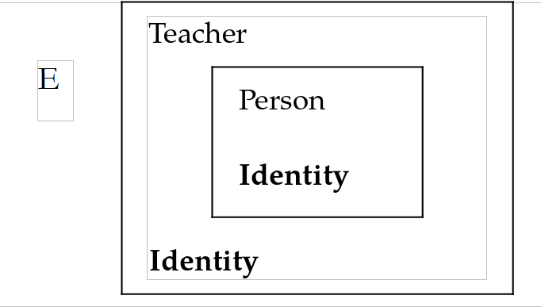

4. 类、结构、接口
4.1. 通过示例了解对象
4.1.1. 概述
现在我们将通过示例来探讨面向对象编程。对象是一个实体，它包含定义其状态的数据（称为字段、属性等）以及函数（称为方法）。对象是根据一种称为类的模板创建的：
| public class C1
{
Type1 p1; // 字段 p1
Type2 p2; // 字段 p2
...
Type3 M3(...) // 方法 M3
{
...
}
Type4 M4(...) // 方法 M4
{
...
}
...
}
|
以前面的类 [C1] 为基础，可以创建许多对象，例如 [O1]、[O2] 等。它们都将具有字段 [p1]、[p2] 等以及方法 [M3]、[M4] 等。不过，它们的 [pi] 字段值各不相同，因此每个对象都有自己独特的状态。如果 [o1] 是类型为 [C1] 的对象，则 [o1.p1] 指的是 [o1] 的字段 [p1]，而 [o1.M3] 指的是 [o1] 的方法 [M3]。
让我们考虑一个初始的对象模型：[Person] 类。
4.1.2. 创建 C# 项目
在上一章的示例中，一个程序只占用一个源文件。从现在起，一个程序可以由多个源文件组成：每个类一个文件，外加主程序。这些文件被组织在一个项目中。2008 年的课程使用 Visual Studio 2008 向导创建项目；这里我们使用命令行工具 [dotnet]，它在 Windows、Linux 和 macOS 上的工作方式相同。第 2 章已经展示了如何在 VS Code 或 Visual Studio 中打开同一个项目。
在终端中，进入 [04-classes] 文件夹，创建一个名为 [Persons] 的控制台项目：
| > dotnet new console -n Persons
The template "Console App" was created successfully.
Processing post-creation actions...
Restoring .../04-classes/Persons/Persons.csproj:
Determining projects to restore...
Restored .../04-classes/Persons/Persons.csproj (in 126 ms).
Restore succeeded.
|
该命令创建一个名为 [Persons] 的文件夹，其中包含两个文件。文件 [Persons.csproj] 描述该项目：
| <Project Sdk="Microsoft.NET.Sdk">
<PropertyGroup>
<OutputType>Exe</OutputType>
<TargetFramework>net10.0</TargetFramework>
<ImplicitUsings>enable</ImplicitUsings>
<Nullable>enable</Nullable>
</PropertyGroup>
</Project>
|
- 第 4 行：该项目生成一个可执行文件；
- 第 5 行：目标程序是 .NET 10；
- 第 6 行：一组常用命名空间（[System]、[System.IO]、[System.Collections.Generic]、[System.Linq] 等）被隐式导入项目中的所有源文件。这就是为什么我们可以直接写
*[Console.WriteLine] 而不需要 ***[using System;]** 子句；
- 第 7 行：启用了可为 null 的引用类型。对于任何可能在程序未预期的情况下取值为 [null] 的引用类型变量（字符串、对象），编译器都会发出警告。我们将在专门介绍这些类型的小节中再回到这一点；目前只需记住，我们的程序编译时必须没有任何警告。
第二个文件 [Program.cs] 包含主程序。项目文件夹（及其子文件夹）中的所有 [*.cs] 文件都属于该项目：要添加 [Person] 类，只需创建文件 [Person.cs] ，放在 [Persons] 文件夹中。要运行项目，请在其文件夹中键入 [dotnet run] ：该命令会在项目发生变化时先编译项目，然后运行它。
本章中的所有项目都被组织在一个解决方案中，它是引用一组项目的文件，VS Code 或 Visual Studio 可以一次性全部打开。[.slnx] （XML）格式自 .NET 9 起即受 [dotnet] 命令支持，并从 .NET 10 起成为默认格式，取代了旧的 [.sln] 格式：
| > dotnet new sln --format slnx -n 04-classes
The template "Solution File" was created successfully.
> dotnet sln 04-classes.slnx add Persons/Persons.csproj
Project `Persons/Persons.csproj` added to the solution.
|
随后，[dotnet build 04-classes.slnx] 命令会编译解决方案中的所有项目。
4.1.3. Person 类的定义
[Person] 类在源文件 [Person.cs] 中的定义如下：
| namespace Persons;
public class Person
{
// 属性（字段）
private string firstName = "";
private string lastName = "";
private int age;
// 方法
public void Initialize(string p, string n, int age)
{
this.firstName = p;
this.lastName = n;
this.age = age;
}
// 方法
public void Identify()
{
Console.WriteLine($"[{firstName}, {lastName}, {age}]");
}
}
|
- 第 1 行：该类属于 [Persons] 命名空间（即项目名称）。这种形式 [namespace Persons;]被称为“文件范围”，它将文件中的所有类型放入该命名空间。命名空间将在本章末尾讨论；
- 第 6–8 行：该类的三个字段。两个字符串用空字符串初始化；否则，创建对象时它们会被设置为 [null] ，而启用了可为 null 类型的编译器会发出警告；
- 第 11–15 行：一个设置对象状态的方法；
- 第 19–21 行：一个显示对象状态的方法。
这里我们给出了一个类的定义，也就是一种数据类型。当我们创建这种类型的变量时，称它们为对象或类的实例。因此，类是构造对象所依据的模板。
类的成员可以是数据（字段）、方法（函数）或属性。属性是用于获取或设置对象字段值的特殊方法。这些成员可以带有下列关键字之一：
关键字 | 访问 |
[private] | 私有成员只能由类的内部方法访问。这是默认的访问级别 |
[public] | 公共成员可以被任何方法访问，无论该方法是否定义在该类之内 |
[protected] | 受保护成员只能通过该类或其派生类的内部方法访问（见下文的继承概念） |
[internal] | 内部成员可以被同一程序集（同一项目）内的任何方法访问 |
一般来说，类的数据声明为私有，而其方法和属性声明为公共。这意味着对象的使用者（程序员）：
- 无法直接访问对象的私有数据；
- 可以调用对象的公共方法，包括那些提供对其私有数据访问的方法。
声明类 [C] 的语法如下：
| public class C
{
private private data, method or property;
public public data, method or property;
protected protected data, method or property;
}
|
声明 [private]、[protected]、和 [public] 成员的顺序是任意的。
4.1.4. Initialize 方法
[Initialize] 方法的作用是什么？因为 [lastName]、[firstName] 和 [age] 是 [Person] 类的私有成员，所以下面的语句：
| Person p1;
p1.firstName = "Jean";
p1.lastName = "Dupont";
p1.age = 30;
|
是无效的。我们需要使用公共方法来初始化类型为 [Person] 的对象。这就是 [Initialize] 方法的用途。我们将这样写：
| Person p1;
p1.Initialize("Jean", "Dupont", 30);
|
记法 [p1.Initialize] 是有效的，因为 [Initialize] 是公开可访问的。
4.1.5. new 运算符
然而，前面的语句序列是不正确的。语句
将 [p1] 声明为对类型为 [Person] 的对象的引用。该对象尚不存在，因此 [p1] 没有被初始化。当我们随后写下 [p1.Initialize("Jean", "Dupont", 30)] 时，我们调用的是 [Initialize] 方法，作用于 [p1] 所引用的对象。然而，该对象并不存在，编译器会报告错误：局部变量 [p1] 尚未赋值。如果我们这样写：
| Person? p1 = null;
p1.Initialize("Jean", "Dupont", 30);
|
我们用关键字 [null] 明确表示变量 [p1] 尚未引用任何对象（[Person?] 中的问号表示该变量可以被设置为 [null]）。此时编译器只会发出一个警告（解引用 null 引用），而在运行时，方法调用会抛出 [NullReferenceException] 异常。要让 [p1] 引用一个对象，必须这样写：
| Person p1 = new Person();
|
这会创建一个类型为 [Person] 的、尚未初始化的对象：它的字段具有默认值，在本例中，[lastName] 和 [firstName] 为空字符串，[age] 为 0（没有显式初始值的数值字段为 0；引用类型的字段为 [null]）。既然 [p1] 已经引用了一个对象，那么针对该对象的初始化语句 [p1.Initialize("Jean", "Dupont", 30)]，就是有效的。
4.1.6. this 关键字
我们来看 [Initialize] 方法的代码：
| public void Initialize(string p, string n, int age)
{
this.firstName = p;
this.lastName = n;
this.age = age;
}
|
语句 [this.firstName = p] 表示把值 [p] 赋给当前对象（[this]）的字段 [firstName]。关键字 [this] 指的是当前对象，即正在执行该方法的那个对象。我们是怎么知道的呢？来看看在调用程序中，[p1] 所引用的对象是如何初始化的：
| p1.Initialize("Jean", "Dupont", 30);
|
被调用的是对象 [p1] 的方法 [Initialize] 。当在该方法内部引用对象 [this] 时，它实际上指的是对象 [p1]。方法 [Initialize] 也可以写成下面这样：
| public void Initialize(string p, string n, int age)
{
firstName = p;
lastName = n;
this.age = age;
}
|
当对象的某个方法引用该对象的字段 [A] 时，隐含着 [this.A] 这一写法。当标识符发生冲突时，必须显式使用它。语句 [this.age = age;] 就属于这种情况，其中 [age] 既指当前对象的字段，又指方法接收到的参数 [age] 。在这种情况下，必须通过把字段 [age] 写作 [this.age] 来消除歧义。
4.1.7. 测试程序
下面是一个简短的测试程序。它写在项目的源文件 [Program.cs] 中：
| using Persons;
// 一个 Person 对象
Person p1 = new Person();
p1.Initialize("Jean", "Dupont", 30);
p1.Identify();
|
- 第 1 行：主程序使用不属于任何命名空间的顶级语句编写。要仅通过名称引用类 [Person] ，必须使用子句 [using] 导入其命名空间 [Persons] ；
- 第 4 行：创建由 [p1] 引用的 [Person] 对象；
- 第 5 行：初始化该对象；
- 第 6 行：显示其状态。
结果：
| > dotnet run
[Jean, Dupont, 30]
|
4.1.8. 单文件应用程序
对于简短的示例，使用项目就显得过于繁琐。自版本 10 起，独立的源文件可以直接由 .NET 执行，无需 [.csproj] 文件：这就是单文件应用程序，我们在上一章中已经使用过。项目选项（启用可为 null 的类型、隐式 [using]）与控制台项目相同。只要示例仅包含一两个类，我们就使用这种格式。
这样，文件中先是顶级语句，随后才是类声明：编译器强制要求这种顺序，因为顶级语句必须位于文件中所有类型声明（类、结构、接口等）之前。以这种方式声明的类不属于任何命名空间，这在单文件程序中无关紧要。
4.1.9. 另一种方法：重载
我们继续使用类 *[Person] ，并为它添加第二个方法 *[Initialize]。程序 *[classes-01.cs]* 如下：
| // Initialize 方法的重载
Person p1 = new Person();
p1.Initialize("Jean", "Dupont", 30);
p1.Identify();
Person p2 = new Person();
p2.Initialize(p1);
p2.Identify();
// Person 类声明在顶级语句之后
public class Person
{
// 属性
private string firstName = "";
private string lastName = "";
private int age;
// 用三个值初始化
public void Initialize(string p, string n, int age)
{
firstName = p;
lastName = n;
this.age = age;
}
// 用另一个人初始化
public void Initialize(Person p)
{
firstName = p.firstName;
lastName = p.lastName;
age = p.age;
}
// 这个人的身份信息
public void Identify()
{
Console.WriteLine($"[{firstName}, {lastName}, {age}]");
}
}
|
- 第 2–7 行：顶级指令，即主程序；
- 第 10 行：类 [Person] 在顶级语句之后声明；
- 第 18–22 行：上一段中的方法 [Initialize] ；
- 第 26–30 行：第二个方法 [Initialize]。
现在我们有两个名为 [Initialize] 的方法：只要它们接受的参数不同（个数或类型不同），这就是有效的。我们称方法 [Initialize] 被重载。编译器根据实际参数选择要调用的方法：[p1.Initialize("Jean", "Dupont", 30)] （第 3 行）调用第一个，而 [p2.Initialize(p1)] （第 6 行）调用第二个。
第二个方法的参数是指向某个人的引用（[p]）。于是该人（[p]）的字段被赋给当前对象（[this]）。请注意，方法 [Initialize] 可以直接访问对象 [p] 的字段，尽管这些字段是私有的（第 28–30 行）。这始终成立：类 [C] 的方法可以访问同一个类 [C] 的所有对象的私有成员。
结果：
| > dotnet run classes-01.cs
[Jean, Dupont, 30]
[Jean, Dupont, 30]
|
4.1.10. Person 类的构造函数
构造函数是与类同名的方法，在创建对象时被调用。它通常用于初始化对象。它是可以接受参数但不返回值的方法。其声明前面没有任何类型（甚至没有 [void]）。
如果类 [C] 有一个接受 n 个参数的构造函数，则该类对象的声明和初始化可以这样进行：
| C obj = new C(arg1, arg2, ... argn);
|
或者
| C obj;
...
obj = new C(arg1, arg2, ... argn);
|
当类 [C] 有一个或多个构造函数时，必须使用其中一个构造函数来创建该类的对象。如果类 [C] 没有构造函数，则它有一个默认构造函数，即无参构造函数 [public C()]。此时对象的字段保留其初始值。这就是前面的程序中发生的情况，我们在那里写的是 [new Person()]。
程序 [classes-02.cs] 为类 [Person] 提供了三个构造函数：
| // Person 类的构造函数
Person p1 = new Person("Jean", "Dupont", 30);
p1.Identify();
Person p2 = new Person(p1);
p2.Identify();
Person p3 = new Person();
p3.Identify();
public class Person
{
// 属性
private string firstName;
private string lastName;
private int age;
// 主构造函数
public Person(string firstName, string lastName, int age)
{
this.firstName = firstName;
this.lastName = lastName;
this.age = age;
}
// 复制构造函数：它调用主构造函数
public Person(Person p) : this(p.firstName, p.lastName, p.age)
{
}
// 无参构造函数：它同样调用主构造函数
public Person() : this("?", "?", 0)
{
}
// 这个人的身份信息
public void Identify()
{
Console.WriteLine($"[{firstName}, {lastName}, {age}]");
}
}
|
- 第 17–21 行：“主”构造函数初始化三个字段。由于其参数与字段同名，因此使用 [this] 来区分字段；
- 第 25 行：复制构造函数。写法 [: this(p.firstName, p.lastName, p.age)] 表示在执行该构造函数（空的）主体之前，先执行同一个类中接受三个参数的构造函数，这三个参数是 [string], [string], [int]——这被称为链式构造函数。这样，初始化代码只需编写一次；
- 第 30 行：无参构造函数，它同样链接到主构造函数。由于该类已经声明了构造函数，它就不再有默认构造函数：如果我们希望能够写 [new Person()]，就必须声明它；
- 第 11–14 行：这两个字符串在声明时不再初始化。这已不再必要：所有构造函数，无论是直接还是通过链式调用，都会为它们赋值，并且编译器会对此进行验证。
2008 年的课程让构造函数调用 [Initialize] 方法。使用 [this(...)] 进行链式调用更可取：启用可为 null 的类型后，编译器不会检查构造函数所调用的方法的内容，并会警告字段 [firstName] 和 [lastName] 在构造结束时可能被设置为 [null] 。
结果：
| > dotnet run classes-02.cs
[Jean, Dupont, 30]
[Jean, Dupont, 30]
[?, ?, 0]
|
4.1.11. 对象引用
我们使用上一个程序中的 [Person] 类，省略其无参构造函数，但保留本章开头的 [Initialize(string, string, int)] 方法。测试程序变为下面的 [classes-03.cs] （我们不再重复给出该类）：
| // 对象引用
// p1
Person p1 = new Person("Jean", "Dupont", 30);
Console.Write("p1="); p1.Identify();
// p2 引用与 p1 相同的对象
Person p2 = p1;
Console.Write("p2="); p2.Identify();
// p3 引用的对象是 p1 所引用对象的副本
Person p3 = new Person(p1);
Console.Write("p3="); p3.Identify();
// 我们修改 p1 所引用对象的状态
p1.Initialize("Micheline", "Benoît", 67);
Console.Write("p1="); p1.Identify();
// 由于 p2 = p1，p2 所引用的对象状态也变了
Console.Write("p2="); p2.Identify();
// p3 与 p1 引用的不是同一个对象：p3 所引用的对象没有改变
Console.Write("p3="); p3.Identify();
// p1 和 p2 是同一个引用吗？p1 和 p3 呢？
Console.WriteLine($"p1 == p2 : {p1 == p2}, p1 == p3 : {p1 == p3}");
|
结果：
| > dotnet run classes-03.cs
p1=[Jean, Dupont, 30]
p2=[Jean, Dupont, 30]
p3=[Jean, Dupont, 30]
p1=[Micheline, Benoît, 67]
p2=[Micheline, Benoît, 67]
p3=[Jean, Dupont, 30]
p1 == p2 : True, p1 == p3 : False
|
当变量 [p1] 被声明为 [Person p1 = new Person("Jean", "Dupont", 30);] （第 3 行）时，[p1] 引用对象 [Person("Jean", "Dupont", 30)] ，但它本身并不是该对象。在 C 语言中，这被称为指针，即所创建对象的地址。如果我们随后写 [p1 = null;]，被修改的并不是对象 [Person("Jean", "Dupont", 30)] ，而是引用 [p1] 改变了它的值。如果没有任何其他变量引用该对象，它就会“丢失”：它所占用的内存稍后将由 .NET 的垃圾回收器回收。
当我们写 [Person p2 = p1;] （第 6 行）时，我们初始化引用 [p2]：它与引用 [p1] 一样“指向”同一个对象（引用同一个对象）。因此，如果被 [p1] “指向”（或引用）的对象被修改，那么被 [p2] 引用的对象也会被修改（结果的第 5–6 行）。
当写下 [Person p3 = new Person(p1);]（第 9 行）时，会创建一个新的 [Person] 对象。这个新对象将由 [p3] 引用。如果被 [p1] 引用的对象被修改，被 [p3] 引用的对象（第 7 行）保持不变。
最后，在第 19 行，运算符 [==] 应用于两个对象引用时，表示它们是否引用同一个对象：[p1] 和 [p2] 引用同一个对象，而 [p1] 和 [p3] 引用两个不同的对象，尽管它们的内容相同（第 8 行）。
4.1.12. 传递对象引用参数
在上一章中，我们研究了函数参数为简单类型（[int]、[double] 等）时是如何传递的。现在来看看参数是对象引用时会发生什么。为此，我们将使用 .NET 中的类 [StringBuilder] 。[string] 对象不能被修改：诸如 [s.ToUpper()] 之类的操作返回的是一个新的 [string] 对象。而 [StringBuilder] 对象则是可变字符串：它的方法 [Append] 向字符串添加字符，而不创建新对象。
程序 [classes-04.cs] 如下：
| using System.Text;
// 传递对象引用类型的参数
StringBuilder sb0 = new StringBuilder("test0"), sb1 = new StringBuilder("test1"), sb2 = new StringBuilder("test2");
Console.WriteLine($"In calling function before call: sb0={sb0}, sb1={sb1}, sb2={sb2}");
ChangeStringBuilder(sb0, sb1, ref sb2, out StringBuilder sb3);
Console.WriteLine($"In calling function after call: sb0={sb0}, sb1={sb1}, sb2={sb2}, sb3={sb3}");
// 被调用的函数
static void ChangeStringBuilder(StringBuilder sbf0, StringBuilder sbf1, ref StringBuilder sbf2, out StringBuilder sbf3)
{
Console.WriteLine($"Start of called function: sbf0={sbf0}, sbf1={sbf1}, sbf2={sbf2}");
sbf0.Append("*****");
sbf1 = new StringBuilder("test1*****");
sbf2 = new StringBuilder("test2*****");
sbf3 = new StringBuilder("test3*****");
Console.WriteLine($"End of called function: sbf0={sbf0}, sbf1={sbf1}, sbf2={sbf2}, sbf3={sbf3}");
}
|
- 第 1 行：类 [StringBuilder] 属于命名空间 [System.Text]，该命名空间不在隐式导入的命名空间之列；
- 第 4 行：三个 [sb0, sb1, sb2] 类型为 [StringBuilder] 的对象引用；
- 第 6 行：它们以不同的方式传递给函数 [ChangeStringBuilder] ：[sb0] 和 [sb1] 使用默认方式，[sb2] 使用关键字 [ref]，第四个引用 [sb3] 则在调用本身中声明（[out StringBuilder sb3]），使用关键字 [out]；
- 第 10–17 行：一个带有形式参数 [sbf0, sbf1, sbf2, sbf3] 的局部函数。形式参数 [sbfi] 与实际参数 [sbi] 之间的关系如下：
- [sbf0] 和 [sb0] 在函数开始时是两个不同的引用，指向同一个对象（引用是按值传递的）；
- [sbf1] 和 [sb1] 同理；
- [sbf2] 和 [sb2] 是同一个引用（关键字 [ref]）；
- [sbf3] 和 [sb3] 也是同一个引用（关键字 [out]），函数必须对其进行初始化。
结果：
| > dotnet run classes-04.cs
In calling function before call: sb0=test0, sb1=test1, sb2=test2
Start of called function: sbf0=test0, sbf1=test1, sbf2=test2
End of called function: sbf0=test0*****, sbf1=test1*****, sbf2=test2*****, sbf3=test3*****
In calling function after call: sb0=test0*****, sb1=test1, sb2=test2*****, sb3=test3*****
|
说明：
- [sb0] 和 [sbf0] 是指向同一个对象的两个不同的引用。该对象通过 [sbf0] 被修改（第 13 行）。这一修改通过 [sb0] 可见（第 5 行）；
- [sb1] 和 [sbf1] 是指向同一个对象的两个不同的引用。[sbf1] 在函数内部被赋予新值，现在指向一个新对象（第 14 行）。这不会改变 [sb1] 的值，它仍然指向原来未被修改的对象；
- [sb2] 和 [sbf2] 是同一个引用。[sbf2] 现在指向一个新对象（第 15 行）。由于 [sbf2] 和 [sb2] 是同一个实体，[sb2] 也指向这个新对象；
- 在函数调用之前，[sb3] 没有值。调用之后，[sb3] 引用由函数创建的对象（第 16 行）。
4.1.13. 临时对象
在表达式中，可以显式调用对象的构造函数：对象被创建，但没有变量可供以后访问它（例如修改它）。这个临时对象是为了计算表达式而创建的，随后即被丢弃。它所占用的内存空间稍后将由垃圾回收器自动回收，垃圾回收器的作用是回收那些不再被程序数据引用的对象所占用的内存空间。
请看下面的程序 [classes-05.cs]，其中 [Person] 类的构造函数会显示一条消息：
| // 临时对象
new Person(new Person("Jean", "Dupont", 30)).Identify();
public class Person
{
// 属性
private string firstName;
private string lastName;
private int age;
// 构造函数
public Person(string firstName, string lastName, int age)
{
Console.WriteLine("Constructor Person(string, string, int)");
this.firstName = firstName;
this.lastName = lastName;
this.age = age;
}
public Person(Person p)
{
Console.WriteLine("Constructor Person(Person)");
firstName = p.firstName;
lastName = p.lastName;
age = p.age;
}
// 这个人的身份信息
public void Identify()
{
Console.WriteLine($"[{firstName}, {lastName}, {age}]");
}
}
|
- 第 2 行：对象 [Person("Jean", "Dupont", 30)] 被构造出来，然后传递给复制构造函数，由后者构造第二个对象；随后在该对象上调用方法 [Identify]。这两个对象都没有被变量引用。
结果：
| > dotnet run classes-05.cs
Constructor Person(string, string, int)
Constructor Person(Person)
[Jean, Dupont, 30]
|
结果显示了两个临时对象的先后创建。
4.1.14. 读取和写入私有字段的方法
我们为 [Person] 类添加必要的方法，以读取或修改对象字段的状态（[classes-06.cs]）：
| // 私有属性的读方法（getter）和写方法（setter）
Person p = new Person("Jean", "Michelin", 34);
Console.WriteLine("p=(" + p.GetFirstName() + "," + p.GetLastName() + "," + p.GetAge() + ")");
p.SetAge(56);
Console.WriteLine("p=(" + p.GetFirstName() + "," + p.GetLastName() + "," + p.GetAge() + ")");
public class Person
{
// 属性
private string firstName;
private string lastName;
private int age;
// 构造函数
public Person(string firstName, string lastName, int age)
{
this.firstName = firstName;
this.lastName = lastName;
this.age = age;
}
// getter
public string GetFirstName()
{
return firstName;
}
public string GetLastName()
{
return lastName;
}
public int GetAge()
{
return age;
}
// setter
public void SetFirstName(string firstName)
{
this.firstName = firstName;
}
public void SetLastName(string lastName)
{
this.lastName = lastName;
}
public void SetAge(int age)
{
this.age = age;
}
}
|
- 第 22–35 行：读取方法，称为 getter；
- 第 38–51 行：写入方法，称为 setter。
结果：
| > dotnet run classes-06.cs
p=(Jean,Michelin,34)
p=(Jean,Michelin,56)
|
这种做法是 Java 语言的典型做法。C# 提供了一种更优雅的机制：属性。
4.1.15. 属性
还有另一种访问类字段的方式：创建属性。属性使我们能够像操作公共字段一样操作私有字段。
属性允许读取（[get]）或设置（[set]）字段的值。属性的声明如下：
| public Type Property
{
get { ... }
set { ... }
}
|
其中 [Type] 通常是该属性所管理的字段的类型。它可以有两个名为 [get] 和 [set] 的方法。方法 [get] 通常负责返回其所管理字段的值（它也可以返回别的东西，没有什么可以阻止这样做）。[set] 方法接收一个名为 [value] 的参数，通常把它赋给所管理的字段。它可以借此机会验证接收到的值是否有效，必要时在值无效时抛出异常。
请看程序 [classes-07.cs]，其中前面的访问器和修改器已被可读写属性取代：
| // 属性
Person p = new Person("Jean", "Michelin", 34);
Console.WriteLine("p=(" + p.FirstName + "," + p.LastName + "," + p.Age + ")");
p.Age = 56;
Console.WriteLine("p=(" + p.FirstName + "," + p.LastName + "," + p.Age + ")");
try
{
p.Age = -4;
}
catch (ArgumentException ex)
{
Console.WriteLine(ex.Message);
}
// 对象初始化器：先调用无参构造函数，再对属性赋值
Person p2 = new Person { Age = 7, FirstName = "Arthur", LastName = "Martin" };
Console.WriteLine($"p2=({p2.FirstName},{p2.LastName},{p2.Age})");
try
{
Person p3 = new Person { FirstName = "Paul", LastName = " " };
}
catch (ArgumentException ex)
{
Console.WriteLine(ex.Message);
}
public class Person
{
// 属性
private string firstName = "";
private string lastName = "";
private int age;
// 构造函数
public Person(string firstName, string lastName, int age)
{
// 我们通过属性访问，以利用它们的检查
FirstName = firstName;
LastName = lastName;
Age = age;
}
public Person()
{
}
// 属性
public string FirstName
{
get { return firstName; }
set
{
// 名字有效吗？
if (string.IsNullOrWhiteSpace(value))
{
throw new ArgumentException($"invalid first name ({value})");
}
firstName = value;
}
}
public string LastName
{
get { return lastName; }
set
{
// 姓氏有效吗？
if (string.IsNullOrWhiteSpace(value))
{
throw new ArgumentException($"invalid last name ({value})");
}
lastName = value;
}
}
public int Age
{
get { return age; }
set
{
// 年龄有效吗？
if (value < 0)
{
throw new ArgumentException($"invalid age ({value})");
}
age = value;
}
}
}
|
这三个属性的 [set] 方法都会验证接收到的值（第 52–57 行、66–71 行、80–85 行）。
- 第 53–55 行：方法 [string.IsNullOrWhiteSpace] 返回 [true] 的条件是字符串为 [null]、空字符串或仅由空格组成。抛出的异常类型是 [ArgumentException]，这是 .NET 为表示无效参数而定义的异常。2008 年的版本抛出的是一般类型的 [Exception] 异常，这要求调用者捕获所有异常；
- 第 34–39 行：构造函数通过属性而不是字段来初始化对象。这样它就可以利用 [set] 方法执行的验证，而这些验证只在一个地方实现。
方法 [get] 和 [set] 是如何被调用的呢？在第 3 行的语句中，程序试图获取人员 [FirstName]、[LastName]、和 [Age] 属性的值，该人员是 [p]。随后会调用这些属性的 [get] 方法，它返回其所管理字段的值。在 [p.Age = 56;] 语句（第 4 行）中，我们想设置 [Age] 属性的值。于是调用该属性的 [set] 方法。它收到 56 作为其 [value] 参数。
属性 [P] （属于类 [C] ）如果只定义了方法 [get] ，则称为只读属性。如果 [c] 是类 [C] 的对象，则操作 [c.P = value] 会被编译器拒绝。
结果：
| > dotnet run classes-07.cs
p=(Jean,Michelin,34)
p=(Jean,Michelin,56)
invalid age (-4)
p2=(Arthur,Martin,7)
invalid last name ( )
|
结果的第 4 行显示，赋值 [p.Age = -4] （第 8 行）被属性 [Age] 的 [set] 方法拒绝了。
4.1.16. 对象初始化器
属性可以通过下面的语法与构造函数结合使用：
| Class obj = new Class(...) { Property1 = val1, Property2 = val2, ... };
|
这种语法称为对象初始化器，等价于下面的代码：
| Class obj = new Class(...);
obj.Property1 = val1;
obj.Property2 = val2;
...
|
属性的顺序无关紧要。在前面的程序 [classes-07.cs]中，类 [Person] 有一个不初始化任何内容的无参构造函数。让我们回到主程序的末尾：
| // 对象初始化器：先调用无参构造函数，再对属性赋值
Person p2 = new Person { Age = 7, FirstName = "Arthur", LastName = "Martin" };
Console.WriteLine($"p2=({p2.FirstName},{p2.LastName},{p2.Age})");
try
{
Person p3 = new Person { FirstName = "Paul", LastName = " " };
}
catch (ArgumentException ex)
{
Console.WriteLine(ex.Message);
}
|
第 15 行：使用无参构造函数创建一个人，然后通过其属性对其进行初始化。我们本来也可以写成 [new Person() { Age = 7, ... }]，但在这种语法中，无参构造函数的圆括号不是必需的。[set] 方法确实被调用了：在第 19 行，包含空格的名字被拒绝（结果的第 6 行）。
4.1.17. 自动属性
在许多情况下，属性的 [get] 和 [set] 方法只是读写一个私有字段，而不做任何其他处理。在这种情况下，可以使用如下声明的自动属性 ：
| public Type Property { get; set; }
|
与该属性关联的私有字段无需声明；它由编译器自动生成，并且只能通过其属性访问。因此，不必编写字段 [firstName] 和属性 [FirstName] （用于程序 [classes-07.cs]），你可以写：
| public string FirstName { get; set; } = "";
|
而无需声明私有字段 [firstName]。属性后面的表达式 [= ""] 是隐藏字段的初始值。这两个属性的区别在于，第一个在 [set] 中验证名字，而第二个不执行任何验证。
使用自动属性 [FirstName] 是否等价于声明一个公共字段 [public string FirstName;]？对于类的使用者来说，语法是相同的。然而，不建议把类的字段声明为公共：这违反了对象状态封装的概念，对象的状态应当是私有的，并通过公共方法公开。使用自动属性，以后可以在 [set] 中添加检查，而无需更改类的使用者的代码。
自动属性有几种变体，程序 [classes-08.cs] 演示了这些变体：
| // 自动属性、只读属性、init 属性和 required 属性
var p = new Person("Dupont", 30) { FirstName = "Jean", City = "Angers" };
Console.WriteLine(p.Identity);
// FirstName 可读写
p.FirstName = "Jacques";
// Age 只能在类内部修改
p.GrowOlder();
Console.WriteLine(p.Identity);
// 以下几行会被编译器拒绝
// p.LastName = "Durand"; // LastName 是只读的
// p.Age = 40; // Age 的 set 是私有的
// p.City = "Paris"; // City 只能在创建对象时设置
// 必需属性（required）
var c = new Contact { Email = "jean.dupont@example.com" };
Console.WriteLine($"Contact: {c.Email}, {c.Phone}");
// var c2 = new Contact(); // 被拒绝：必需属性 Email 未初始化
public class Person
{
// 构造函数
public Person(string lastName, int age)
{
LastName = lastName;
Age = age;
}
// 带初始值的读写自动属性
public string FirstName { get; set; } = "";
// 只读自动属性：由构造函数设置
public string LastName { get; }
// 仅限类内部写入的自动属性
public int Age { get; private set; }
// init 属性：由构造函数或对象初始化器设置
public string City { get; init; } = "?";
// 只读计算属性（表达式体成员）
public string Identity => $"[{FirstName}, {LastName}, {Age}, {City}]";
// 表达式体方法
public void GrowOlder() => Age++;
}
public class Contact
{
// 属性必须在创建对象时初始化
public required string Email { get; init; }
// 可选属性
public string Phone { get; init; } = "unknown";
}
|
- 第 29 行：带初始值的可读写自动属性；
- 第 31 行：只读自动属性，它没有 [set] ，只能由构造函数设置（第 24 行）；
- 第 33 行：[set] 方法的访问权限可以比属性更严格：这里，[Age] 属性对所有人可读，但只能由类的方法修改，例如 [GrowOlder] （第 40 行）；
- 第 35 行：[init] 属性（C# 9）：它可以由构造函数 或对象初始化器（第 2 行）设置，但此后不能再设置。这是在利用对象初始化器语法的同时创建不可变对象的一种方式；
- 第 37 行：值经过计算得出的只读属性。写法 [=> expression] 是 [get { return expression; }] 的简写形式。它也适用于方法（第 40 行）：这些被称为表达式体成员；
- 第 46 行：必需属性（C# 11）：关键字 [required] 要求创建 [Contact] 对象的代码在对象初始化器中初始化 [Email] 属性（第 15 行）。如果取消第 17 行的注释，编译器会拒绝它；
- 第 10–12 行：三条被编译器拒绝的语句，原因见注释。
请回忆，使用关键字 [var] （第 2 行）时，变量的类型由初始化它的表达式推断，在本例中为 [Person]。
结果：
| > dotnet run classes-08.cs
[Jean, Dupont, 30, Angers]
[Jacques, Dupont, 31, Angers]
Contact: jean.dupont@example.com, unknown
|
最后，自动属性可以声明为虚属性（[public virtual string Prop { get; set; }]），并在派生类中被重写，例如在 [set] 中添加验证。关键字 [virtual] 和 [override] 将在讲解继承时介绍。
4.1.18. field 关键字（C# 14）
在不执行任何验证的自动属性与 [classes-07.cs] 程序中需要声明字段的完整属性之间，C# 14 提供了一个折中方案：在属性的访问器中，关键字 [field] 指代编译器创建的字段。这样无需声明字段就能编写验证逻辑：
| // field 关键字（C# 14）
var p = new Person { FirstName = " jean ", LastName = "Dupont", Age = 30 };
Console.WriteLine(p.Identity);
try
{
p.LastName = "";
}
catch (ArgumentException ex)
{
Console.WriteLine(ex.Message);
}
try
{
p.Age = -4;
}
catch (ArgumentException ex)
{
Console.WriteLine(ex.Message);
}
Console.WriteLine(p.Identity);
public class Person
{
// 带检查而无需声明字段的属性：
// [field] 表示由编译器创建的字段
public string FirstName
{
get;
set => field = string.IsNullOrWhiteSpace(value)
? throw new ArgumentException($"invalid first name ({value})")
: value.Trim();
} = ""; // 隐藏字段的初始值
public string LastName
{
get;
set => field = string.IsNullOrWhiteSpace(value)
? throw new ArgumentException($"invalid last name ({value})")
: value.Trim();
} = "";
public int Age
{
get;
set
{
if (value < 0)
{
throw new ArgumentException($"invalid age ({value})");
}
field = value;
}
}
// 身份信息
public string Identity => $"[{FirstName}, {LastName}, {Age}]";
}
|
- 第 26–31 行：属性 [FirstName]。它的 [get] 方法是自动的（[get;]）：它返回隐藏字段的值。它的 [set] 方法检查接收到的值，并把去掉首尾空格后的值赋给由 [field] 指代的隐藏字段。表达式 [condition ? throw ... : value] 使用了 throw 语句：如果条件为真，则抛出异常；否则，表达式的值为 [value.Trim()]；
- 第 32 行：隐藏字段的初始值；
- 第 42–51 行：使用语句块编写的 [set] 。
结果：
| > dotnet run classes-09.cs
[jean, Dupont, 30]
invalid last name ()
invalid age (-4)
[jean, Dupont, 30]
|
名字“jean”在传入时两侧带有空格（程序第 2 行），存储时已去掉这些空格（结果第 2 行）。
4.1.19. 类方法和类属性
假设我们想统计应用程序中创建的 [Person] 对象的数量。我们可以自己维护一个计数器，但有可能遗漏到处创建的临时对象。更稳妥的做法似乎是在 [Person] 类的构造函数中加入一条递增计数器的语句。这个计数器不能是普通字段，因为每个对象都有自己的字段：它是类本身的字段，而不是该类某个特定实例的字段。我们使用关键字 [static] 来声明它：
| private static long nbPersons;
|
要引用它，我们写 [Person.nbPersons] ，以表明它是 [Person] 类本身的字段。这里我们创建的是私有字段，不能从类的外部直接访问。因此我们创建一个公共属性，以提供对类字段 [nbPersons] 的访问。要返回 [nbPersons] 的值，该属性的 [get] 方法并不需要特定的 [Person] 对象：所以我们还需要一个声明为 [static] 的属性，它将在外部通过语法 [Person.NbPersons] 调用。下面是 [classes-10.cs] 的示例：
| // 类成员（static）
Person p1 = new Person("Jean", "Dupont", 30);
Person p2 = new Person(p1);
new Person(p1);
Console.WriteLine($"Number of persons created: {Person.NbPersons}");
// 类方法
Person p3 = Person.Unknown();
p3.Identify();
Console.WriteLine($"Number of persons created: {Person.NbPersons}");
public class Person
{
// 类属性
private static long nbPersons;
// 类属性
public static long NbPersons
{
get { return nbPersons; }
}
// 类方法
public static Person Unknown()
{
return new Person("?", "?", 0);
}
// 实例属性
private string firstName;
private string lastName;
private int age;
// 构造函数
public Person(string firstName, string lastName, int age)
{
this.firstName = firstName;
this.lastName = lastName;
this.age = age;
nbPersons++;
}
public Person(Person p) : this(p.firstName, p.lastName, p.age)
{
}
// 这个人的身份信息
public void Identify()
{
Console.WriteLine($"[{firstName}, {lastName}, {age}]");
}
}
|
- 第 14 行：类字段。与任何数值字段一样，它被初始化为 0；
- 第 17–19 行：只读的类属性。它还可以更简单地写成 [public static long NbPersons { get; private set; }]；
- 第 23–25 行：类方法。它通过类名调用：[Person.Unknown()] （第 7 行）。类方法没有当前对象：关键字 [this] 在这里没有意义，并且它只能直接访问类的 [static] 成员；
- 第 39 行：主构造函数递增计数器。链接到主构造函数的复制构造函数因此也会递增计数器。
结果：
| > dotnet run classes-10.cs
Number of persons created: 3
[?, ?, 0]
Number of persons created: 4
|
程序正确地统计了第 4 行创建的临时对象。我们从一开始就在使用类成员：[Console.WriteLine]、[int.Parse] 和 [Math.Sqrt] 都是 [static] 方法。[Console] 和 [Math] 甚至是静态类 （[static class]）：它们只包含 [static], 类型的成员，并且不能创建它们的实例。
4.1.20. 人员数组
对象和其他数据一样，因此可以把多个对象组合在一个数组中 [classes-11.cs]：
| // 一个 Person 数组
Person[] friends = new Person[3];
friends[0] = new Person("Jean", "Dupont", 30);
friends[1] = new Person("Sylvie", "Vartan", 52);
friends[2] = new Person("Neil", "Armstrong", 66);
// 显示
foreach (Person friend in friends)
{
friend.Identify();
}
|
- 第 2 行：创建一个包含 3 个 [Person] 类型元素的数组。这 3 个元素在此被初始化为值 [null]，即它们不引用任何对象。严格来说，我们把它称为“对象数组”，尽管它只是对象引用的数组。数组的创建（数组本身也是对象，如 [new] 所示）并不会创建与其元素同类型的任何对象；这必须在随后完成。请注意，编译器不会指出类型为 [Person[]] 的数组的元素在创建后立即等于 [null] ：这是可为 null 类型分析的一个局限；
- 第 3–5 行：创建 3 个 [Person] 类型的对象；
- 第 7–9 行：显示数组 [friends] 的内容。
下面声明的类 [Person] 源自程序 [classes-03.cs]，精简为只保留其三参数构造函数和方法 [Identify]。结果：
| > dotnet run classes-11.cs
[Jean, Dupont, 30]
[Sylvie, Vartan, 52]
[Neil, Armstrong, 66]
|
4.1.21. 带目标类型的 new() 表达式
当根据上下文可以知道要创建的对象的类型时，C# 9 允许在 [new] 之后省略类名。程序 [classes-12.cs] 演示了这一点：
| // 对象初始化器和目标类型 new() 表达式
// 所创建对象的类型由变量的类型推断得出
Person p1 = new("Jean", "Dupont", 30);
Person p2 = new() { FirstName = "Arthur", LastName = "Martin", Age = 7 };
// 由集合表达式初始化的数组
Person[] friends =
[
p1,
p2,
new("Sylvie", "Vartan", 52),
new() { FirstName = "Neil", LastName = "Armstrong", Age = 66 },
];
foreach (Person friend in friends)
{
Console.WriteLine(friend.Identity);
}
// 方法调用中的目标类型 new()：类型就是参数的类型
Display(new("Pauline", "Leduc", 12));
// 一个局部函数
static void Display(Person p)
{
Console.WriteLine($"Display: {p.Identity}");
}
public class Person
{
// 构造函数
public Person(string firstName, string lastName, int age)
{
FirstName = firstName;
LastName = lastName;
Age = age;
}
public Person()
{
}
// 自动属性
public string FirstName { get; set; } = "";
public string LastName { get; set; } = "";
public int Age { get; set; }
// 身份信息
public string Identity => $"[{FirstName}, {LastName}, {Age}]";
}
|
- 第 3 行：由 [new(...)] 创建的对象的类型就是接收它的变量的类型，即 [Person]。这种语法与 [var] 相反：使用 [var] 时，变量的类型由表达式推断；使用 [new()] 时，对象的类型由变量推断；
- 第 4 行：带有对象初始化器的 [new()] ；
- 第 6–11 行：通过集合表达式 （C# 12）创建并填充的数组：元素用方括号括起来，并以逗号分隔。元素的类型 [Person] 是已知的：[new(...)] 足以创建它们；
- 第 18 行：所创建对象的类型就是 [Display] 函数的参数的类型。
结果：
| > dotnet run classes-12.cs
[Jean, Dupont, 30]
[Arthur, Martin, 7]
[Sylvie, Vartan, 52]
[Neil, Armstrong, 66]
Display: [Pauline, Leduc, 12]
|
4.2. 通过示例了解继承
4.2.1. 概述
这里我们讨论继承的概念。继承的目的是“定制”一个现有的类，使其满足我们的需求。假设我们想创建一个名为 [Teacher] 的类：教师是一种特定类型的人。他们具有其他人所没有的属性：例如所教授的科目。但他们也具有所有人共有的属性：名、姓和年龄。因此，教师完全属于类 [Person] ，但具有额外的属性。与其从头创建类 [Teacher] ，我们更愿意在现有类 [Person] 的基础上进行构建，并使其适应教师的特殊性。继承的概念使我们能够做到这一点。
要表明类 [Teacher] 继承类 [Person] 的特性，我们这样写：
| public class Teacher : Person
|
[Person] 称为父类（或基类），[Teacher] 称为派生类（或子类）。[Teacher] 对象具有 [Person] 对象的所有特征：它具有相同的字段和方法。父类的这些字段和方法不会在子类的定义中重复；我们只需指明子类新增的字段和方法。一个 C# 类只能派生自一个父类。
本节的示例是两个控制台项目 [Inheritance1] 和 [Inheritance2]，它们来自 [04-classes.slnx] 解决方案。在 [Inheritance1] 项目中，[Person] 类定义如下：[Person.cs]：
| namespace Inheritance1;
public class Person
{
// 类属性：已创建的人数
public static long NbPersons { get; private set; }
// 构造函数
public Person(string firstName, string lastName, int age)
{
FirstName = firstName;
LastName = lastName;
Age = age;
NbPersons++;
Console.WriteLine("Constructor Person(string, string, int)");
}
// 属性
public string FirstName
{
get;
set => field = Check(value, "first name");
} = "";
public string LastName
{
get;
set => field = Check(value, "last name");
} = "";
public int Age
{
get;
set => field = value >= 0 ? value : throw new ArgumentException($"invalid age ({value})");
}
// 这个人的身份信息
public string Identity => $"[{FirstName}, {LastName}, {Age}]";
// 检查必填字符串
private static string Check(string text, string label)
{
if (string.IsNullOrWhiteSpace(text))
{
throw new ArgumentException($"invalid {label} ({text})");
}
return text;
}
}
|
- 第 6 行：上一段中的人员计数器，这次写成自动类属性，其定义仅限于该类内部；
- 第 9–15 行：构造函数通过属性初始化对象，并显示一条进度消息；
- 第 19–34 行：三个使用关键字 [field] 验证其值的属性。名和姓的验证是相同的，已被提取到私有类方法 [Check] 中（第 41–47 行）；
- 第 38 行：前面示例中的 [Identify] 方法已被只读属性 [Identity] 取代，该属性返回人员的身份，而不是显示它。
我们创建一个名为 [Teacher] 的类，它继承自类 [Person]：[Teacher.cs]：
| namespace Inheritance1;
public class Teacher : Person
{
// 构造函数
public Teacher(string firstName, string lastName, int age, int section)
: base(firstName, lastName, age)
{
// 通过 Section 属性存储部门
Section = section;
// 跟踪
Console.WriteLine("Constructor Teacher(string, string, int, int)");
}
// Section 属性
public int Section { get; set; }
// Identity 属性：它隐藏（new）父类的同名属性
public new string Identity => $"Teacher[{base.Identity},{Section}]";
}
|
[Teacher] 类在 [Person] 类的方法和属性之外又增加了：
- 第 3 行：类 [Teacher] 派生自类 [Person]；
- 第 16 行：属性 [Section]，即教师在教学人员中所属的组号（大致每个科目一个组）；
- 第 6–12 行：用于初始化教师全部属性的构造函数；
- 第 19 行：一个新属性 [Identity]，稍后将更详细地讨论。
4.2.2. 创建 Teacher 对象
子类不会继承父类的构造函数，它必须定义自己的构造函数。[Teacher] 类的构造函数如下：
| public Teacher(string firstName, string lastName, int age, int section)
: base(firstName, lastName, age)
{
// 通过 Section 属性存储部门
Section = section;
// 跟踪
Console.WriteLine("Constructor Teacher(string, string, int, int)");
}
|
第 6–7 行的声明指明该构造函数接受四个参数：[firstName]、[lastName]、[age]、[section]，并将其中三个（[firstName]、[lastName]、[age]）传递给它的基类，在这里就是类 [Person]。我们知道该类有一个构造函数 [Person(string, string, int)]，它使我们能够用传入的参数创建一个人。一旦 [Person] 部分构造完成，[Teacher] 对象的构造便继续执行构造函数的主体（第 10 行）。
请注意，在 = 号的左侧使用的是 [Section] 属性。如果该属性执行有效性检查，构造函数就能从中受益。这样就避免了把这些检查放在两个不同的地方：构造函数和属性。
总之，派生类的构造函数：
- 把构造自身所需的参数传递给基类；
- 使用其余参数初始化自己的成员。
我们本来也可以选择这样写：
| public Teacher(string firstName, string lastName, int age, int section)
{
this.firstName = firstName;
this.lastName = lastName;
this.age = age;
Section = section;
}
|
这是不可能的，原因有二。首先，类 *[Person] 没有无参构造函数：在没有 ***[: base(...)] 的情况下，编译器会尝试调用这个构造函数并报错。其次，即使私有字段 [firstName]、[lastName] 和 [age] 存在（这里它们是属性的隐藏字段），也只有类 [Person] 的对象才能直接访问它们。所有其他对象，包括本例中派生类的对象，都必须通过公共（或受保护）成员来访问它们。如果类 *[Person] 把这些字段声明为受保护（*[protected]*)），情况就会不同：这样就允许派生类直接访问它们。因此，使用父类的构造函数才是正确的解决方案，也是标准做法：构造子对象时，先调用父对象的构造函数，然后完成子对象特有的初始化（在我们的示例中是 [Section]* ）。
如果类 [Teacher] 没有定义属性 [Identity]，则表达式 [e.Identity]（其中 [e] 是一位教师）将指向属性 [Identity] ，它继承自类 [Person]：它是公共的，并且通过继承成为类 [Teacher]的公共属性。这样得到的将是该教师的 [Person] 部分的身份，而不包含其组号。
4.2.3. 隐藏属性或方法：new 关键字
为了获得教师的完整身份，类 [Teacher] 定义了自己的属性 [Identity]：
| // Identity 属性：它隐藏（new）父类的同名属性
public new string Identity => $"Teacher[{base.Identity},{Section}]";
|
属性 [Identity] （属于类 [Teacher] ）借助其父类的属性 [Identity] （记作 [base.Identity]）来获得“Person”部分，然后补充上类 [Teacher] 特有的组号。
考虑一个教师对象 [E]。这个对象包含一个 [Person] 对象：

属性 [Identity] 在类 [Teacher] 及其父类 [Person] 中都有定义。在子类 [Teacher] 中，属性 [Identity] 前面带有关键字 [new] ，以表明有意定义了一个新属性 [Identity]，专属于类 [Teacher]（如果没有 [new]，编译器会发出警告）。类 [Teacher] 现在有两个属性 [Identity]：
- 一个是从父类 [Person] 继承的；
- 另一个是它自己的。
如果 [E] 是一个 [Teacher] 对象，则 [E.Identity] 指的是属性 [Identity] ，它属于类 [Teacher]。人们说，属性 [Identity] （子类的）屏蔽了（隐藏）父类的属性 [Identity] 。一般来说，如果 [O] 是一个对象，[M] 是一个方法，要执行方法 [O.M]，编译器会按以下顺序查找方法 [M] ：
- 在对象 [O] 的类中；
- 在其父类中（如果有的话）；
- 在其父类的父类中（如果存在的话）；
- 依此类推。
因此，继承允许子类重新定义与父类同名的方法和属性。这使得子类能够适应其自身的需要。
项目 [Inheritance1] 的测试程序 [Program.cs] 如下：
| using Inheritance1;
// 一名教师
Teacher e = new Teacher("Lucile", "Dumas", 56, 61);
// Teacher 类的 Identity 属性
Console.WriteLine(e.Identity);
// Person 类的 Identity 属性仍然存在
Console.WriteLine(((Person)e).Identity);
// 一个人
Person p = new Person("Jean", "Dupont", 30);
// Display 方法接收一个 Person 或派生类的对象
Display(e);
Display(p);
// 从 object 类继承的 ToString 方法
Console.WriteLine(e.ToString());
Console.WriteLine(p.ToString());
Console.WriteLine($"Number of persons created: {Person.NbPersons}");
// 显示 p 的身份信息
static void Display(Person p)
{
Console.WriteLine(p.Identity);
}
|
- 第 4 行：创建一位教师；
- 第 6 行：显示其身份，即类 [Teacher] 的身份；
- 第 8 行：转换运算符 [(Person)] 把对象 [e] 当作 [Person] 处理：此时使用的是属性 [Identity] ，属于类 [Person] ；
- 第 12–13 行：先以一位教师、再以一个人调用函数 [Display] （第 20–22 行）。我们将在下一段回到这一点；
- 第 15–16 行：对这两个对象调用 [ToString] 方法。我们也会回到这一点。
结果：
| > dotnet run
Constructor Person(string, string, int)
Constructor Teacher(string, string, int, int)
Teacher[[Lucile, Dumas, 56],61]
[Lucile, Dumas, 56]
Constructor Person(string, string, int)
[Lucile, Dumas, 56]
[Jean, Dupont, 30]
Inheritance1.Teacher
Inheritance1.Person
Number of persons created: 2
|
我们可以看到：
- 对象 [Person] （第 2 行）是在对象 [Teacher] （第 3 行）之前创建的；
- [e.Identity] 提供了教师的完整身份（第 4 行），而 [((Person)e).Identity] 提供了其 [Person] 部分的身份 （第 5 行）。
4.2.4. 多态
考虑一个类层次结构：C0 ← C1 ← C2 ← … ← Cn，其中 Ci ← Cj 表示类 Cj 派生自类 Ci。这意味着类 Cj 具有类 Ci 的所有特征，外加一些额外的特征。设 Oi 为类型为 Ci 的对象。当 j > i 时，写 [Oi = Oj] 是合法的。确实，根据继承，类 Cj 具有类 Ci 的所有特征，外加一些额外的特征。因此，类型为 Cj 的对象 Oj 包含一个类型为 Ci 的对象。操作 [Oi = Oj] 使 Oi 成为对 Oj 对象中所含的 Ci 类型对象的引用。
类 Ci 的变量 Oi 实际上不仅可以引用类 Ci 的对象，还可以引用从类 Ci 派生的任何对象，这一事实称为多态：变量引用不同类型对象的能力。
我们举个例子，来看前面程序中的函数 [Display] ：
| static void Display(Person p)
{
Console.WriteLine(p.Identity);
}
|
我们既可以向它传递 *[Person]*，也可以传递 *[Teacher]：在后一种情况下，形式参数 [p], 其类型为 [Person], 接收到类型为 [Teacher] 的值。由于类型 [Teacher] 派生自类型 [Person]*，这是合法的。
属性 [p.Identity] 返回一个标识 [Person] 对象 [p] 的字符串。如果传递给 [Display] 函数的参数是类型为 [Teacher] 的对象，会发生什么？前面的结果表明：语句 [p.Identity] 每次执行的都是 [Identity] 属性，属于 [Person] ，先是教师 [e] 中所含的那个人（第 7 行），然后是人 [p] 本身（第 8 行）。它没有适应实际传递给 [Display] 的对象。我们本来希望得到教师 [e] 的完整身份。要做到这一点，记法 [p.Identity] 就必须指向 [Identity] 属性，该属性属于 [p], 实际所指向的对象，而不是该对象“Person”部分的属性 [Identity] 。使用屏蔽（[new]）时，属性是在编译时，根据变量的声明类型（[Person]）选定的。
4.2.5. 重新定义与多态：virtual 和 override
通过将 [Identity] 声明为虚属性（[virtual]），并放在基类 [Person] 中，就可以得到期望的结果。这正是 [Inheritance2] 项目所做的；其 [Person] 类与 [Inheritance1] 项目中的类相同，只有两处改动：
| // 人的身份信息：虚属性
public virtual string Identity => $"[{FirstName}, {LastName}, {Age}]";
// 重写 object 类的 ToString 方法
public override string ToString() => Identity;
|
- 第 38 行：关键字 [virtual] 使 [Identity] 成为虚属性。该关键字也可用于方法。重写虚属性或虚方法的子类，必须使用关键字 [override] 而不是 [new] 来修饰其被重写的属性或方法；
- 第 41 行：对方法 [ToString] 的重新定义，将在下一段讨论。
在类 [Teacher] 中，属性 [Identity] 的重新定义如下：
| namespace Inheritance2;
// 密封类：任何类都不能从它派生
public sealed class Teacher : Person
{
// 构造函数
public Teacher(string firstName, string lastName, int age, int section)
: base(firstName, lastName, age)
{
Section = section;
Console.WriteLine("Constructor Teacher(string, string, int, int)");
}
// Section 属性
public int Section { get; set; }
// Identity 属性：它重写（override）父类的同名属性
public override string Identity => $"Teacher[{base.Identity},{Section}]";
}
|
- 第 18 行：属性 [Identity] 重写了父类中的同名属性；
- 第 4 行：该类是密封的（[sealed]），我们稍后将更详细地解释。
对于虚属性或虚方法，由 [p.Identity] 执行哪个属性是在运行时，根据 [p] 所引用对象的实际类型来决定的。项目 [Inheritance2] 的程序 [Program.cs] 如下：
| using Inheritance2;
// 一名教师
Teacher e = new Teacher("Lucile", "Dumas", 56, 61);
Display(e);
// 一个人
Person p = new Person("Jean", "Dupont", 30);
Display(p);
// Console.WriteLine(object) 显示对象的 ToString 方法的结果
Console.WriteLine(e);
Console.WriteLine(p);
// 一个包含不同类型人员的数组
Person[] persons = [p, e];
foreach (Person person in persons)
{
Console.WriteLine($"{person.GetType().Name} : {person}");
}
// 显示 p 的身份信息
static void Display(Person p)
{
Console.WriteLine(p.Identity);
}
|
结果：
| > dotnet run
Constructor Person(string, string, int)
Constructor Teacher(string, string, int, int)
Teacher[[Lucile, Dumas, 56],61]
Constructor Person(string, string, int)
[Jean, Dupont, 30]
Teacher[[Lucile, Dumas, 56],61]
[Jean, Dupont, 30]
Person : [Jean, Dupont, 30]
Teacher : Teacher[[Lucile, Dumas, 56],61]
|
这一次，在第 4 行，函数 [Display] 正确地显示了教师的全名。
4.2.6. ToString 方法
类 [object] （类 [System.Object] 的 C# 别名）是所有 C# 类的“父”类。因此，当你写：
你实际上隐式地写的是：
| public class Person : object
|
[object] 类定义了一个虚方法 [ToString]，默认情况下它返回对象的完整类名。这就是 [Inheritance1] 项目输出的最后两行所显示的内容，对应对 [e.ToString()] 和 [p.ToString()] 的调用：[Inheritance1.Teacher] 和 [Inheritance1.Person]。尽管我们没有重写 [ToString] 方法（在 [Person] 和 [Teacher] 类中），但 [ToString] 方法（属于 [object] 类）仍能显示对象的实际类名。
在 [Inheritance2] 项目中，[Person] 类重新定义了 [ToString] 方法（见上文）：
| public override string ToString() => Identity;
|
让我们回到程序 [Program.cs] ，它位于项目 [Inheritance2] 中：
| // Console.WriteLine(object) 显示对象的 ToString 方法的结果
Console.WriteLine(e);
Console.WriteLine(p);
// 一个包含不同类型人员的数组
Person[] persons = [p, e];
foreach (Person person in persons)
{
Console.WriteLine($"{person.GetType().Name} : {person}");
}
|
在第 10 行，方法 [WriteLine] （属于类 [Console] ）没有接受类型为 [Person] 的参数的变体。在 [WriteLine] 的各种变体中，有一个接受类型为 [object] 的参数。编译器将使用这个方法 [WriteLine(object o)]，因为这个签名意味着参数 [o] 可以是类型 [object] 或其派生类型。由于 [object] 是所有类的超类，任何对象都可以作为参数传递给 [WriteLine]，包括类型为 [Person] 或 [Teacher] 的对象。[WriteLine(object o)] 方法把 [o.ToString()] 写入控制台。由于 [ToString] 方法是虚方法，所以使用的是实际对象的 [ToString] 方法，在这里就是 [Person] 类的方法。该方法返回 [Identity]，它同样是虚属性：因此，对于教师 [e]，使用的是属性 [Identity] ，属于类 [Teacher] ，如结果的第 7 行所示。因此，与 2008 年的课程不同，无需重新定义 [ToString] （在类 [Teacher] 中）。
字符串插值遵循同样的机制：在 [$"{person}"] （第 16 行）中，对象 [person] 通过其方法 [ToString]转换为字符串。第 14–16 行的循环遍历一个指向 [Person] 的引用数组，这些引用实际指向不同类型的对象：方法 [GetType] （同样继承自 [object]）返回对象的实际类型，其属性 [Name] 即为类型名称。
4.2.7. 密封类
[Inheritance2] 项目中的类 [Teacher]被声明为 [public sealed class Teacher : Person]。关键字 [sealed] 禁止从类 [Teacher] 派生新类：声明 [class TeacherResearcher : Teacher] 会被编译器拒绝。当一个类不打算被继承时，就将其声明为密封类；编译器和运行时还可以对其虚方法的调用进行优化。该关键字也适用于被重写的方法或属性：[public sealed override string Identity] 会禁止派生类再次重写它，但并不禁止从该类派生。
反过来，未声明为 [virtual]、[abstract] （见下文）或 [override] 的方法或属性不能用 [override] 重写：在 C# 中，与 Java 不同，方法默认不是虚方法。
4.3. 为类重新定义运算符的含义
4.3.1. 简介
考虑表达式 [op1 + op2]，其中 [op1] 和 [op2] 是两个操作数。我们可以重新定义运算符 [+] 的含义。如果操作数 [op1] 是类 [C1] 的实例，则必须在类 [C1] 中定义一个具有如下签名的静态方法：
| public static Type operator +(C1 operand1, C2 operand2)
|
当编译器遇到表达式 [op1 + op2]时，会将其转换为 [C1.operator +(op1, op2)]。方法 [operator] 返回的类型很重要。事实上，考虑运算 [op1 + op2 + op3]，编译器将其解释为 [(op1 + op2) + op3]。设 [res12] 为 [op1 + op2] 的结果。接下来执行的运算是 [res12 + op3]。如果 [res12] 的类型是 [C1]，它同样会被转换为 [C1.operator +(res12, op3)]。这使得运算可以链式进行。
只有一个操作数的一元运算符也可以重新定义。因此，如果 [op1] 是类型为 [C1] 的对象，则运算 [op1++] 可以通过 [C1] 类的一个静态方法来重新定义：
| public static C1 operator ++(C1 operand1)
|
这里所述内容适用于大多数运算符，但有几个例外：
- 运算符 [==] 和 [!=] 必须一起重新定义，[<] 和 [>]、[<=] 和 [>=] 也是如此；
- 运算符 [&&]、[||]、[=]、[.]、[?:]、[??] 和 [new] 不能重新定义；
- 直到 C# 13，复合赋值运算符（[+=]、[-=] 等）都无法被重载：[a += b] 始终被编译为 [a = a + b]。C# 14 允许重载它们，我们稍后会看到。
4.3.2. 一个示例
解决方案中的 [Lists] 项目定义了一个名为 [ListOfPersons] 的类，它是一个人员列表。该项目中的类 [Person] 和 [Teacher] 与 [Inheritance2] 项目中的相同，只是去掉了跟踪消息和人员计数器。2008 年的课程中，类 *[ListOfPersons] 派生自类 *[ArrayList]*，即 *[object] 类型对象的列表，现已过时。我们使用泛型列表 [List<Person>] （泛型类将在本章后面讨论；类 [List<T>] 将在下一章介绍），并且不继承它，而是将它放在类的一个私有字段中。这称为使用 组合 而非继承：类 [ListOfPersons] 因此只公开它所选择的操作。对于类 [List<Person>]，我们只使用以下元素：
- 方法 [L.Add(p)]，它将人员 [p] 添加到列表 [L] 中；以及方法 [L.AddRange(L2)]，它将列表 [L2] 的所有元素添加到列表中；
- 属性 [L.Count]，它返回列表 [L] 中的元素个数；
- 记法 [L[i]]，它表示列表 [L] 中的第 i 个元素。
类 [ListOfPersons] 的定义如下：[ListOfPersons.cs]：
| namespace Lists;
public class ListOfPersons
{
// 列表中的人员
private readonly List<Person> persons = [];
// 列表中的人数
public int Count => persons.Count;
// + 运算符：返回一个新列表，包含 l 中的人员和人员 p
public static ListOfPersons operator +(ListOfPersons l, Person p)
{
ListOfPersons result = new ListOfPersons();
result.persons.AddRange(l.persons);
result.persons.Add(p);
return result;
}
// 复合赋值运算符 +=（C# 14）：把 p 添加到当前列表
public void operator +=(Person p)
{
persons.Add(p);
}
// 按位置的索引器，可读可写
public Person this[int i]
{
get { return persons[i]; }
set { persons[i] = value; }
}
// 按姓氏的索引器，只读：返回该人的位置，找不到则返回 -1
public int this[string lastName]
{
get
{
// 我们查找这个人
for (int i = 0; i < persons.Count; i++)
{
if (persons[i].LastName == lastName)
{
return i;
}
}
return -1;
}
}
// ToString：返回 (person1,person2,...)
public override string ToString()
{
return "(" + string.Join(",", persons) + ")";
}
}
|
- 第 6 行：人员列表。关键字 [readonly] 表示该字段只能在声明时或构造函数中赋值：列表本身的内容可以改变，但该字段始终引用同一个列表。[] 是空集合表达式：所创建集合的类型 [List<Person>] 由字段的类型推断得出；
- 第 9 行：人员数量，一个只读属性；
- 第 12–17 行：为运算 [l + p] 定义运算符 [+]，其中 [l] 的类型为 [ListOfPersons] ，[p] 的类型为 [Person] 或其派生类型。该运算符创建一个新列表（第 14 行），将 [l] 中的人员复制到其中（第 15 行），然后添加人员 [p] （第 16 行）。与数字或字符串的 [+] 运算符一样，操作数不会被修改。由于列表 [l] 属于同一个类，该运算符可以访问它的私有字段 [l.persons]。结果列表的类型为 [ListOfPersons]，这使得 [+] 运算符可以像 [l + p1 + p2] 那样链式使用，按运算符优先级解释为 [(l + p1) + p2]；
- 第 21–23 行：运算符 [+=] （C# 14）的定义。与其他运算符不同，它不是静态方法，而是没有返回值（[void]）的实例方法：它修改当前对象，此处是向其中添加人员 [p]；
- 第 51–53 行：我们重新定义方法 [ToString] ，将人员列表显示为 (person1, person2, ...) 的形式，其中 personi 本身是该人员的 [ToString] 方法的结果。静态方法 [string.Join(separator, elements)] 将各元素的文本表示连接起来，并以分隔符隔开。2008 年的课程使用 [StringBuilder] 对象手工构建这个字符串。
请注意，[ListOfPersons] 类没有构造函数。因此它使用默认构造函数 [public ListOfPersons()]，该构造函数只是用声明中指定的值初始化 [persons] 字段。第 26–46 行将在下一节讨论。
测试程序 [Program.cs] 开头如下：
| using Lists;
// —— + 运算符
// 一个人员列表
ListOfPersons l = new ListOfPersons();
// 添加人员
l = l + new Person("jean", "martin", 10) + new Person("pauline", "leduc", 12);
// 显示
Console.WriteLine("l=" + l);
// l + p 返回一个新列表：l 未被修改
ListOfPersons l2 = l + new Person("louis", "durand", 8);
Console.WriteLine("l=" + l);
Console.WriteLine("l2=" + l2);
// —— += 运算符（C# 14）
ListOfPersons l3 = l;
// += 把教师添加到 l 所引用的列表中，而不创建新列表
l += new Teacher("camille", "germain", 27, 60);
Console.WriteLine("l=" + l);
// l 和 l3 仍然引用同一个对象
Console.WriteLine($"l3=l : {ReferenceEquals(l, l3)}");
|
- 第 5 行：创建空的人员列表 [l]；
- 第 7 行：使用 [+] 运算符添加两个人员；
- 第 11 行：[l + p] 创建一个新列表 [l2]；列表 [l] 保持不变；
- 第 18 行：使用 [+=] 运算符添加一名教师；
- 第 9–13 行：连接字符串和对象时会使用 [ToString] 方法，该方法已在 [ListOfPersons] 类中被重新定义。
结果：
| > dotnet run
l=([jean, martin, 10],[pauline, leduc, 12])
l=([jean, martin, 10],[pauline, leduc, 12])
l2=([jean, martin, 10],[pauline, leduc, 12],[louis, durand, 8])
l=([jean, martin, 10],[pauline, leduc, 12],Teacher[[camille, germain, 27],60])
l3=l : True
|
4.3.3. 复合赋值运算符（C# 14）
为什么要定义运算符 [+=] ，而 [l = l + p] 能产生相同的输出呢？如果类没有定义 [+=]，编译器会将 [l += p] 转换为 [l = l + p]：创建一个新列表，将 [l] 中的所有人员复制进去，然后 [l] 引用这个新列表，旧列表则由垃圾回收器丢弃。如果类定义了运算符 [+=] ，则人员会被直接添加到现有列表中而无需复制。第 16 行保存了对列表 [l3] 的第二个引用，该列表即 [l]；在 [l += ...] 语句之后，两个引用仍然指向同一个对象（结果的第 6 行），这证明列表没有被重新创建。对于大型列表或在循环中，性能差异十分显著。
4.4. 为类定义索引器
这里我们继续使用类 [ListOfPersons]。如果 [l] 是 [ListOfPersons] 的实例，我们希望能够使用记法 [l[i]] 来表示列表 [l] 中第 i 个人员，既可读取（[Person p = l[i]]）也可写入（[l[i] = new Person(...)]）。
为了能够写出 [l[i]]，其中 [l[i]] 表示一个 [Person] 对象，我们需要在 [ListOfPersons] 类中定义一个名为 [this] 的特殊属性：
| // 按位置的索引器，可读可写
public Person this[int i]
{
get { return persons[i]; }
set { persons[i] = value; }
}
// 按姓氏的索引器，只读：返回该人的位置，找不到则返回 -1
public int this[string lastName]
{
get
{
// 我们查找这个人
for (int i = 0; i < persons.Count; i++)
{
if (persons[i].LastName == lastName)
{
return i;
}
}
return -1;
}
}
|
属性 [this[int i]] 称为索引器 ，因为它赋予了表达式 [obj[i]] 以意义，该表达式类似数组记法，而 [obj] 并不是数组而是对象。方法 [get] （对象 [obj] 的索引器的方法）在写下 [variable = obj[i]] 时被调用，而方法 [set] 在写下 [obj[i] = value] 时被调用。
- 第 27–30 行：基于位置的索引器。方法 [get] 从私有列表 [persons] 中返回第 i 个人员，方法 [set] 则将人员 [value] 赋给它。2008 年的课程中，类派生自 [ArrayList]，必须用关键字 [new] 隐藏父类的索引器，并将其返回的 [object] 类型元素转换为 [Person]。使用泛型列表后，不再需要转换；
- 第 34–46 行：我们还希望能够写出 [int i = l["lastName"]]，也就是说，不用元素序号而是用人员的姓来索引列表 [l]。[l[lastName]] 的结果是一个整数：即姓为 [lastName] 的人员在列表中的位置，如果该人员不在列表中则为 -1。这里只定义了 [get] 方法，从而禁止了语法 [l["lastName"] = value]，否则就需要定义 [set] 方法。一个类可以有多个索引器，只要它们的参数不同即可。
测试程序继续如下：
| // —— 索引器
// 修改第 1 号元素
l[1] = new Person("franck", "gallon", 5);
// 显示第 1 号元素
Console.WriteLine("l[1]=" + l[1]);
// 显示列表 l
Console.WriteLine("l=" + l);
// 按姓氏查找人员
string[] lastNames = ["martin", "germain", "xx"];
foreach (string lastName in lastNames)
{
int index = l[lastName];
if (index != -1)
{
Console.WriteLine($"Person({lastName})={l[index]}");
}
else
{
Console.WriteLine($"Person({lastName}) does not exist");
}
}
|
- 第 25 行：调用索引器 [this[int]] 的 [set] 方法；
- 第 27 行：调用其 [get] 方法；
- 第 34 行：调用 [this[string]] 索引器；
- 第 37 行：调用 [this[int]] 索引器。
结果：
| l[1]=[franck, gallon, 5]
l=([jean, martin, 10],[franck, gallon, 5],Teacher[[camille, germain, 27],60])
Person(martin)=[jean, martin, 10]
Person(germain)=Teacher[[camille, germain, 27],60]
Person(xx) does not exist
|
4.5. 结构体
4.5.1. 值与引用
C# 的结构体类似于 C 语言的结构体，与类的概念也非常相似。结构体的定义如下：
| struct StructureName
{
// 字段
...
// 属性
...
// 构造函数
...
// 方法
...
}
|
尽管声明相似，但类与结构体之间存在显著差异。例如，结构体不存在继承的概念（不过结构体可以实现接口，接口将在后面讨论）。如果我们编写的类不打算被继承，那么结构体和类之间有哪些差异可以帮助我们在两者之间做出选择呢？让我们通过下面的示例来了解：[classes-13.cs]：
| // 结构体与类：值复制和引用复制
// 一个结构体 sp1
SPerson sp1;
sp1.Name = "paul";
sp1.Age = 10;
Console.WriteLine("sp1=SPerson(" + sp1.Name + "," + sp1.Age + ")");
// 一个结构体 sp2
SPerson sp2 = sp1;
Console.WriteLine("sp2=SPerson(" + sp2.Name + "," + sp2.Age + ")");
// 修改 sp2
sp2.Name = "nicole";
sp2.Age = 30;
// 检查 sp1 和 sp2
Console.WriteLine("sp1=SPerson(" + sp1.Name + "," + sp1.Age + ")");
Console.WriteLine("sp2=SPerson(" + sp2.Name + "," + sp2.Age + ")");
// 一个对象 op1
CPerson op1 = new CPerson();
op1.Name = "paul";
op1.Age = 10;
Console.WriteLine("op1=CPerson(" + op1.Name + "," + op1.Age + ")");
// 一个对象 op2
CPerson op2 = op1;
Console.WriteLine("op2=CPerson(" + op2.Name + "," + op2.Age + ")");
// 修改 op2
op2.Name = "nicole";
op2.Age = 30;
// 检查 op1 和 op2
Console.WriteLine("op1=CPerson(" + op1.Name + "," + op1.Age + ")");
Console.WriteLine("op2=CPerson(" + op2.Name + "," + op2.Age + ")");
// SPerson 结构体
struct SPerson
{
public string Name;
public int Age;
}
// CPerson 类
class CPerson
{
public string Name = "";
public int Age;
}
|
- 第 33–36 行：一个带有两个公共字段的结构体：[Name]、[Age]；
- 第 40–43 行：一个带有两个公共字段的类：[Name]、[Age]。公共字段通常不被提倡，但它使这个示例更易读。
结果：
| > dotnet run classes-13.cs
sp1=SPerson(paul,10)
sp2=SPerson(paul,10)
sp1=SPerson(paul,10)
sp2=SPerson(nicole,30)
op1=CPerson(paul,10)
op2=CPerson(paul,10)
op1=CPerson(nicole,30)
op2=CPerson(nicole,30)
|
这个结构体在此处没有构造函数。它也可以有构造函数，我们稍后会演示。默认情况下，它总是有一个无参构造函数——此处为 [SPerson()]——它将所有字段置为零（引用则置为 [null] ）。
第 3 行的声明创建了一个结构体（[Name]、[Age]），[sp1] 的值就是这个结构体本身。它的字段尚无值：编译器要求在使用结构体（第 6 行）之前，必须先为所有字段赋值（第 4–5 行）。对于类，对象（[Name]、[Age]）必须使用 [new] 运算符显式创建（第 18 行）。该语句创建一个 [CPerson] 对象（大致相当于我们的结构体），此时 [op1] 的值就是该对象的地址（引用）。
总结如下：
- 对于结构体，[sp1] 的值就是结构体本身；
- 对于类，[op1] 的值是所创建对象的地址。

当程序中写下 [SPerson sp2 = sp1;]（第 8 行）时，会创建一个新的结构体 [sp2]（[Name]、[Age]），并用 [sp1] 的值（即结构体本身）对其初始化：

[sp1] 的结构体被复制到 [sp2] 中（图的左侧）。这是值复制。现在来看指令 [CPerson op2 = op1;] （第 23 行）。对于类，[op1] 的值被复制到 [op2]，但由于该值实际上是对象的地址，所以对象本身并没有被复制（图的右侧）。
对于结构体，修改 [sp2] 的值不会改变 [sp1] 的值，程序的结果（结果的第 4–5 行）说明了这一点。对于对象，如果修改 [op2] 所指向的对象，则 [op1] 所指向的对象也会被修改，因为它们是同一个对象（第 8–9 行）。
由此我们可以从这些解释中得出结论：
- 结构体类型变量的值就是结构体本身；
- 类类型变量的值是它所指向对象的地址。
我们说结构体是值类型 ，而类是引用类型。C# 中的简单类型（[int]、[double]、[decimal]、[bool]、[char] 等）是 .NET 结构体（[System.Int32]、[System.Double] 等），而 [string] 和数组是引用类型。结构体适合表示作为值处理的小型数据（点、颜色、日期、金额等）。结构体不会单独分配在垃圾回收器的堆上：结构体类型的局部变量通常放在栈上，结构体数组包含的是结构体本身而不是对它们的引用。
4.5.2. 带有属性和构造函数的结构体
一旦理解了值与引用之间的根本区别，就会发现结构体与类非常相似，如下面的示例所示 [classes-14.cs]：
| // 带构造函数、属性和方法的结构体
// 一个人 p1
SPerson p1 = new SPerson();
Console.WriteLine($"p1={p1}");
p1.Name = "paul";
p1.Age = 10;
Console.WriteLine($"p1={p1}");
// 一个人 p2
SPerson p2 = p1;
Console.WriteLine("p2=" + p2);
// 修改 p2
p2.Name = "nicole";
p2.Age = 30;
// 检查 p1 和 p2
Console.WriteLine("p1=" + p1);
Console.WriteLine("p2=" + p2);
// 一个人 p3
SPerson p3 = new SPerson("amandin", 18);
Console.WriteLine("p3=" + p3);
// 一个人 p4
SPerson p4 = new SPerson { Name = "x", Age = 10 };
Console.WriteLine("p4=" + p4);
// 结构体的默认值：所有字段置零（引用为 null）
SPerson p5 = default;
Console.WriteLine("p5=" + p5);
// 两个结构体相等：比较各字段的值
SPerson p6 = new SPerson("nicole", 30);
Console.WriteLine($"p1.Equals(p2) : {p1.Equals(p2)}, p2.Equals(p6) : {p2.Equals(p6)}");
// SPerson 结构体
struct SPerson
{
// 构造函数
public SPerson(string name, int age)
{
Name = name;
Age = age;
}
public SPerson() : this("?", 0)
{
}
// 属性
public string? Name { get; set; }
public int Age { get; set; }
// ToString
public override string ToString()
{
return $"SPerson({Name},{Age})";
}
}
|
- 第 34–37 行：带有两个参数的构造函数。2008 年的课程中解释过，结构体构造函数不能通过属性初始化字段：这一限制已被取消（C# 11）；
- 第 40 行：自 C# 10 起，结构体可以声明自己的无参构造函数，此处它链接到前一个构造函数。它由 [new SPerson()] （第 3 行）以及第 21 行的对象初始值设定项调用，随后对象初始值设定项会修改这两个属性；
- 第 45–46 行：两个自动属性。属性 [Name] 被声明为 [string?] 类型（可能为 [null] 的字符串），因为结构体总是可以不通过构造函数创建：它的 默认值 （第 24 行）就是这种情况，此时所有字段都置为零，因此名称为 [null]，新创建的结构体数组的元素也是如此；
- 第 49–51 行：重新定义方法 [ToString]。结构体隐式派生自类 [System.ValueType]，而该类本身派生自 [object]；
- 第 28 行：继承自 [ValueType] 的 [Equals] 方法逐字段比较两个结构体。而 [==] 运算符对结构体则没有定义，除非将其重载。
结果：
| > dotnet run classes-14.cs
p1=SPerson(?,0)
p1=SPerson(paul,10)
p2=SPerson(paul,10)
p1=SPerson(paul,10)
p2=SPerson(nicole,30)
p3=SPerson(amandin,18)
p4=SPerson(x,10)
p5=SPerson(,0)
p1.Equals(p2) : False, p2.Equals(p6) : True
|
程序结束时，结构体 [p1] 和 [p2] 是不同的（第 5–6 行）：如果是类，[p1] 和 [p2] 就会引用同一个对象。
4.5.3. 不可变结构体与记录结构体
状态可被修改的结构体可能导致意料之外的结果：由于每次赋值或传递参数时都会复制结构体，人们往往在以为修改原始结构体时，实际修改的是副本。因此，建议将结构体设为不可变：创建之后就不能再修改。程序 [classes-15.cs] 演示了实现这一点的两种方式：
| // 不可变结构体（readonly struct）和记录结构体（record struct）
Point a = new Point(1, 2);
// a.X = 5; // 被拒绝：readonly struct 的属性不能被修改
Point b = a.Move(3, 4);
Console.WriteLine($"a={a}, b={b}");
// 记录结构体：ToString、Equals、== 和 != 由编译器生成
PointR r1 = new PointR(1, 2);
PointR r2 = new PointR(1, 2);
Console.WriteLine($"r1={r1}, r2={r2}");
Console.WriteLine($"r1 == r2 : {r1 == r2}");
// （非 readonly 的）记录结构体可以被修改
r2.Y = 20;
Console.WriteLine($"r2={r2}, r1 == r2 : {r1 == r2}");
// with 表达式创建修改后的副本
PointR r3 = r1 with { X = 10 };
Console.WriteLine($"r3={r3}");
// readonly record struct 是不可变的
Color red = new Color(255, 0, 0);
Color pink = red with { G = 128, B = 128 };
Console.WriteLine($"red={red}, pink={pink}");
// pink.G = 0; // 被拒绝：该结构体是只读的
// 不可变结构体
readonly struct Point
{
public Point(int x, int y)
{
X = x;
Y = y;
}
public int X { get; }
public int Y { get; }
// 我们不修改这个点：而是返回一个新的点
public Point Move(int dx, int dy) => new Point(X + dx, Y + dy);
public override string ToString() => $"({X},{Y})";
}
// “位置”记录结构体：X 和 Y 是公共属性
record struct PointR(int X, int Y);
// 不可变记录结构体
readonly record struct Color(byte R, byte G, byte B);
|
- 第 26–40 行：声明为 [readonly] 的结构体（C# 7.2）。编译器会验证它的所有字段和属性都是只读的。要“移动”一个点，方法 [Move] 返回一个新点（第 38 行）；
- 第 44 行：记录结构体 （C# 10）。这一行代码声明了一个结构体，其构造函数有两个参数 [X] 和 [Y]，并带有两个公共读写属性 [X] 和 [Y]。编译器还会生成名为 [ToString] 的方法（显示结构体名称及其属性）、相等性方法以及运算符 [==] 和 [!=] （第 11 行），并支持表达式 [with]，它通过修改某些属性来创建结构体的副本（第 16 行）；
- 第 47 行：一个不可变记录结构体：它的属性是只读的（更准确地说是 [init]：只能在创建时设置），而表达式 [with] 仍然有效（第 21 行）。
结果：
| > dotnet run classes-15.cs
a=(1,2), b=(4,6)
r1=PointR { X = 1, Y = 2 }, r2=PointR { X = 1, Y = 2 }
r1 == r2 : True
r2=PointR { X = 1, Y = 20 }, r1 == r2 : False
r3=PointR { X = 10, Y = 2 }
red=Color { R = 255, G = 0, B = 0 }, pink=Color { R = 255, G = 128, B = 128 }
|
记录（[record]）也可以作为类存在：我们稍后会详细讨论。现在只需注意，[readonly record struct] 是声明小型不可变值类型数据项最简洁的方式：本章示例应用程序中的税率档次就将使用这种类型。
4.6. 接口
4.6.1. 第一个示例
接口是一组方法或属性声明，构成一份契约。选择实现某个接口的类（或结构体）承诺为接口中定义的所有方法和属性提供实现。编译器会验证这一实现。
例如，下面是 .NET 中 [System.Collections.IEnumerator] 接口的定义：
| public interface IEnumerator
{
// 属性
object Current { get; }
// 方法
bool MoveNext();
void Reset();
}
|
接口的属性和方法仅由其签名定义，没有实现（没有代码）。由实现该接口的类为接口的方法和属性提供代码：
| public class C : IEnumerator
{
...
public object Current { get { ... } }
public bool MoveNext() { ... }
public void Reset() { ... }
}
|
- 第 1 行：类 [C] 实现了接口 [IEnumerator]。请注意，用于实现接口的符号 [:] 与用于派生类的符号相同；
- 第 4–6 行：[IEnumerator] 接口的方法和属性的实现。它们必须是公共的。
按照惯例，接口名称以字母 I 开头。下面的示例构成解决方案中的 [Statistics] 项目。考虑下面的接口 [IStats.cs]：
| namespace Statistics;
public interface IStats
{
// 一系列数值的平均值
double Average { get; }
// 该系列的标准差
double StandardDeviation();
}
|
[IStats] 接口包含：
- 一个只读属性 [Average]：用于计算一系列值的平均值；
- 一个方法 [StandardDeviation]：用于计算标准差。
请注意，这里没有任何地方指明所涉及的是哪一组值。它可以是一个班级的平均成绩、某种产品的月平均销量、某地的平均气温……这正是接口的原则：它们假定对象中存在某些方法，而不假定存在特定的数据。
[IStats] 接口的第一个实现类可以是用于存储某个班级某门科目学生成绩的类。学生由如下 [Student] 结构体表示：[Student.cs]：
| namespace Statistics;
// 一名学生
public readonly record struct Student(string FirstName, string LastName);
|
学生由其名和姓标识。2008 年的课程定义的是带有两个自动属性的结构体；而如上一段所示的不可变记录结构体，只需一行即可表示。成绩由如下结构体表示：[Grade] [Grade.cs]：
| namespace Statistics;
// 一名学生的成绩
public readonly record struct Grade(Student Student, double Value)
{
public override string ToString() => $"[{Student.FirstName},{Student.LastName},{Value}]";
}
|
成绩由被评分的学生和成绩值本身定义。该结构体重新定义了编译器生成的 [ToString] 方法，以 [firstName,lastName,value] 的形式显示成绩。
某一科目所有学生的成绩被归入如下类 [ArrayOfGrades] 中：[ArrayOfGrades.cs]：
| namespace Statistics;
public class ArrayOfGrades : IStats
{
// 属性
public string Subject { get; }
public Grade[] Grades { get; }
public double Average { get; }
// 字段
private readonly double standardDeviation;
// 构造函数
public ArrayOfGrades(string subject, Grade[] grades)
{
// 存储数据
Subject = subject;
Grades = grades;
// 计算成绩的平均值
double sum = 0;
foreach (Grade grade in Grades)
{
sum += grade.Value;
}
Average = Grades.Length != 0 ? sum / Grades.Length : -1;
// 计算标准差
double squares = 0;
foreach (Grade grade in Grades)
{
squares += Math.Pow(grade.Value - Average, 2);
}
standardDeviation = Grades.Length != 0 ? Math.Sqrt(squares / Grades.Length) : -1;
}
// IStats 接口的 StandardDeviation 方法的实现
public double StandardDeviation()
{
return standardDeviation;
}
// ToString
public override string ToString()
{
return $"subject={Subject}, grades=({string.Join(",", Grades)})";
}
}
|
- 第 3 行：类 [ArrayOfGrades] 实现了接口 [IStats]。因此它必须实现属性 [Average] 和方法 [StandardDeviation]。它们分别在第 8 行（[Average]）和第 35–37 行（[StandardDeviation]）实现；
- 第 6–8 行：三个只读自动属性：该对象存储成绩所属的科目、成绩数组以及成绩平均值；
- 第 10 行：一个存储成绩标准差的字段；
- 第 13–31 行：构造函数。这里我们假定传给构造函数的成绩之后不会再改变。因此，我们在构造函数中立即计算这些成绩的平均值和标准差并存储起来。像 [Average] 这样的只读属性可以在构造函数中赋值（第 24 行），之后则不能再赋值。表达式 [condition ? value1 : value2] 将空数组的平均值和标准差设为 -1；
- 第 41–43 行：方法 [ToString] 使用 [string.Join] 连接各个成绩，每个成绩通过结构体 [Grade] 的 [ToString] 方法转换为字符串。
在前面的类中，成绩存储在数组里。在 [ArrayOfGrades] 对象创建之后，无法再添加新成绩。现在我们提供 [IStats] 接口的第二个实现，名为 [ListOfGrades]，这次成绩存储在列表 [List<Grade>] 中，因而可以在 [ListOfGrades] 对象初次创建之后继续添加成绩：[ListOfGrades.cs]：
| namespace Statistics;
public class ListOfGrades : IStats
{
// 属性
public string Subject { get; }
public List<Grade> Grades { get; }
// 已存储的平均值和标准差（null：尚未计算）
private double? average;
private double? standardDeviation;
// 构造函数
public ListOfGrades(string subject, List<Grade> grades)
{
Subject = subject;
Grades = grades;
}
// 添加一个成绩
public void Add(Grade grade)
{
Grades.Add(grade);
// 平均值和标准差需要重新计算
average = null;
standardDeviation = null;
}
// 成绩的平均值：首次请求时计算
public double Average
{
get
{
average ??= ComputeAverage();
return average.Value;
}
}
// 成绩的标准差：首次请求时计算
public double StandardDeviation()
{
standardDeviation ??= ComputeStandardDeviation();
return standardDeviation.Value;
}
private double ComputeAverage()
{
if (Grades.Count == 0)
{
return -1;
}
double sum = 0;
foreach (Grade grade in Grades)
{
sum += grade.Value;
}
return sum / Grades.Count;
}
private double ComputeStandardDeviation()
{
if (Grades.Count == 0)
{
return -1;
}
double m = Average;
double squares = 0;
foreach (Grade grade in Grades)
{
squares += Math.Pow(grade.Value - m, 2);
}
return Math.Sqrt(squares / Grades.Count);
}
// ToString
public override string ToString()
{
return $"subject={Subject}, grades=({string.Join(",", Grades)})";
}
}
|
- 第 3 行：类 [ListOfGrades] 实现了接口 [IStats]；
- 第 7 行：成绩现在存储在列表而不是数组中；
- 第 20–25 行：现在可以在已存储的成绩之外再添加一个成绩。平均值和标准差不再在构造函数中计算，而是按需在接口成员内部计算：[Average] （第 29–34 行）和 [StandardDeviation] （第 39–42 行）。这些值一经计算就会被保存起来，以免每次请求都重新计算：这称为缓存。添加成绩会使缓存失效；
- 第 9–10 行：缓存。类型 [double?] （C# 2）是可空值类型：该类型的变量包含一个 [double] 或 [null]，这里 null 表示“尚未计算”。2008 年的课程为此使用值 -1；
- 第 33 行：[??=] 运算符（C# 8）仅当左侧变量为 [null] 时才对其赋值。因此，方法 [ComputeAverage] 只有在平均值尚未计算时才会被调用。[Value] 属性用于 [double?] 类型的变量，返回其所包含的 [double] 值。
测试程序可以如下所示：[Program.cs]：
| using Statistics;
// 几名学生及其英语成绩
Student[] students = [new Student("Paul", "Martin"), new Student("Maxime", "Germain"), new Student("Berthine", "Samin")];
Grade[] grades = [new Grade(students[0], 14), new Grade(students[1], 16), new Grade(students[2], 18)];
// 我们把它们存储在一个 ArrayOfGrades 对象中
ArrayOfGrades english = new ArrayOfGrades("english", grades);
// 显示平均值和标准差
DisplayStats(english);
// 同样的成绩存放在一个 ListOfGrades 对象中
ListOfGrades french = new ListOfGrades("french", new List<Grade>(grades));
DisplayStats(french);
// 我们添加一个成绩
french.Add(new Grade(new Student("Jérôme", "Jaric"), 10));
DisplayStats(french);
// 变量的类型可以是接口
IStats stats = english;
Console.WriteLine($"English average: {stats.Average}");
stats = french;
Console.WriteLine($"French average: {stats.Average}");
// 显示实现了 IStats 的对象的平均值和标准差
static void DisplayStats(IStats values)
{
Console.WriteLine($"{values}, Average={values.Average}, Standard deviation={values.StandardDeviation()}");
}
|
- 第 4 行：创建一个学生数组；
- 第 5 行：创建一个成绩数组；
- 第 7 行：一个 [ArrayOfGrades] 对象，其平均值和标准差在第 9 行显示；
- 第 11 行：一个 [ListOfGrades] 对象，其平均值和标准差在第 12 行显示。类 [List<Grade>] 有一个接受成绩集合的构造函数，此处传入的是数组 [grades]；
- 第 14 行：添加一个新成绩，然后再次显示；
- 第 23–25 行：函数 [DisplayStats] 接受一个 [IStats] 类型的参数，这是一个接口类型。这意味着实际参数可以是任何实现了 [IStats] 接口的对象。使用接口类型的数据对象时，只会用到该对象所实现的接口中的方法，其余部分被忽略。这一特性类似于我们在类中见过的多态。如果一组彼此之间没有继承关系的类 Ci（因而无法使用基于继承的多态）共享一组具有相同签名的方法，那么把这些方法归入一个接口 I，让所有相关的类都实现它，可能会很有用。这些类
Ci 的实例就可以用作接受 I 类型形式参数的函数的实际参数——也就是说，这些函数只使用 Ci 对象中由接口 I 定义的方法，而不使用各个 Ci 类特有的字段和方法；
- 第 17–19 行：变量可以是接口类型，此时它可以引用任何实现了该接口的类的对象。编译器只允许访问接口的成员：属性 [Average] 和方法 [StandardDeviation]。
结果：
| > dotnet run
subject=english, grades=([Paul,Martin,14],[Maxime,Germain,16],[Berthine,Samin,18]), Average=16, Standard deviation=1,632993161855452
subject=french, grades=([Paul,Martin,14],[Maxime,Germain,16],[Berthine,Samin,18]), Average=16, Standard deviation=1,632993161855452
subject=french, grades=([Paul,Martin,14],[Maxime,Germain,16],[Berthine,Samin,18],[Jérôme,Jaric,10]), Average=14,5, Standard deviation=2,958039891549808
English average: 16
French average: 14,5
|
最后请注意，接口可以有多个实现，也就是说，可以这样写：
| public class DerivedClass : BaseClass, I1, I2, ..., In
{
...
}
|
其中 Ij 是接口：一个类只能继承一个类，但可以实现任意多个接口。
4.6.2. 默认接口方法
从 C# 8 起，接口可以为其部分方法提供默认实现。实现该接口的类既可以使用这一实现，也可以提供自己的实现。例如，这样就可以在不要求所有实现类都修改的情况下，为已发布的接口添加方法。程序 [classes-16.cs] 给出了一个示例：
| // 默认接口方法（C# 8）
IShape[] shapes = [new Square(2), new Circle(1)];
foreach (IShape shape in shapes)
{
Console.WriteLine(shape.Description());
}
// 默认方法只能通过接口类型访问
Square square = new Square(3);
// Console.WriteLine(square.Description()); // 被拒绝：Square 没有定义 Description
Console.WriteLine(((IShape)square).Description());
public interface IShape
{
// 需要实现的方法
double Area();
// 带默认实现的方法
string Description() => $"{GetType().Name} with area {Area():F2}";
}
// Square 使用 Description 的默认实现
public class Square : IShape
{
private readonly double side;
public Square(double side)
{
this.side = side;
}
public double Area() => side * side;
}
// Circle 提供自己的 Description 实现
public class Circle : IShape
{
private readonly double radius;
public Circle(double radius)
{
this.radius = radius;
}
public double Area() => Math.PI * radius * radius;
public string Description() => $"Circle with radius {radius} and area {Area():F2}";
}
|
- 第 12–18 行：[IShape] 接口声明了一个需要实现的方法 [Area]，以及一个带有默认实现的方法 [Description]。该方法可以使用接口的其他成员（[Area]）以及 [object] 的成员（[GetType]）。[{Area():F2}] 格式将面积显示为两位小数；
- 第 22–31 行：类 [Square] 只实现了 [Area]；它默认使用方法 [Description]；
- 第 35–46 行：类 [Circle] 提供了它自己的方法 [Description]；
- 第 10 行：默认方法属于接口，而不属于 [Square] 类：它只能通过 [IShape] 类型的引用来调用。对 [square.Description()] 的调用会被编译器拒绝。
结果：
| > dotnet run classes-16.cs
Square with area 4,00
Circle with radius 1 and area 3,14
Square with area 9,00
|
最后，从 C# 11 起，接口可以声明抽象静态成员，实现该接口的类型必须提供这些成员。它们只用于泛型：我们将在泛型一节末尾介绍。
4.7. 抽象类
抽象类是不能被实例化的类。必须创建派生类，派生类才可以实例化。抽象类可用于重构类层次结构的代码。让我们来看下面的示例，它构成解决方案中的 [Users] 项目：[User.cs]：
| namespace Users;
public abstract class User
{
// 字段
private readonly string login;
private readonly string password;
private readonly string role;
// 构造函数
protected User(string login, string password)
{
// 我们存储这些信息
this.login = login;
this.password = password;
// 我们识别用户
string? role = Identify();
// 已识别？
if (role == null)
{
throw new UnknownUserException($"[{login},{password}]");
}
this.role = role;
}
// ToString
public override string ToString()
{
return $"User[{login},{password},{role}]";
}
// 识别：返回用户的角色，如果无法识别则返回 null
protected abstract string? Identify();
}
|
- 第 3 行：使用关键字 [abstract] 将该类声明为抽象类；
- 第 11–23 行：[User] 类的构造函数。该类存储某个 Web 应用程序的用户信息。该应用程序有多种类型的用户，通过用户名和密码进行身份验证（第 6–7 行）。对于某些用户，这两项信息会与目录（LDAP）核对，对于另一些用户则与数据库核对，等等。该构造函数是 [protected] 的：只能由派生类的构造函数调用；
- 第 14–15 行：存储身份验证信息；
- 第 17 行：由名为 [Identify] 的方法对其进行验证。由于在这一层并不知道身份验证的方式，因此使用关键字 [abstract] 将其声明为抽象方法（第 33 行）。抽象方法没有方法体：由派生类提供。拥有抽象方法的类本身必须声明为抽象类。方法 [Identify] 返回一个指明用户角色的字符串（基本上就是用户被授权做什么），如果用户未被识别则返回 [null] ：因此它的返回类型是 [string?]；
- 第 19–21 行：如果用户未被识别，则抛出异常；
- 第 27–29 行：方法 [ToString]，用于标识类的一个实例。
这里我们假定开发人员希望控制 [User] 类及其派生类实例的构造过程，也许是因为他们希望确保在用户未被识别时抛出某种特定类型的异常。派生类可以依赖这个构造函数，为此它们必须提供方法 [Identify]。请注意，这里的构造函数调用了由派生类重写的方法，即使这些派生类尚未执行它们自己的构造函数：因此方法 [Identify] 不得使用派生类中尚未初始化的任何字段。这种做法应谨慎使用。
[UnknownUserException] 类如下：
| namespace Users;
public class UnknownUserException : Exception
{
public UnknownUserException(string message) : base(message)
{
}
}
|
- 第 3 行：它派生自 [Exception] 类；
- 第 5 行：它只有一个以错误消息为参数的构造函数。该参数被传递给父类，父类有相同的构造函数。
现在我们从类 [User] 派生子类 [Administrator]：
| namespace Users;
public class Administrator : User
{
// 构造函数
public Administrator(string login, string password)
: base(login, password)
{
}
// 识别
protected override string? Identify()
{
// LDAP 识别
// ...
return "admin";
}
}
|
- 第 6–7 行：构造函数只是把收到的参数传递给其父类；
- 第 12–16 行：[Identify] 方法属于 [Administrator] 类。假设管理员通过 LDAP 目录进行身份识别。该方法重写了其父类的抽象方法 [Identify]：关键字 [override] 是必需的（抽象方法隐式为虚方法）。2008 年的课程错误地说成了相反的情形。它保留了所重写方法的访问修饰符 [protected]。
现在我们从类 [User] 派生子类 [Observer]：
| namespace Users;
public class Observer : User
{
// 构造函数
public Observer(string login, string password)
: base(login, password)
{
}
// 识别
protected override string? Identify()
{
// 通过数据库识别
// ...
return "observer";
}
}
|
- 第 12–16 行：[Identify] 方法属于 [Observer] 类。我们假设观察者通过在数据库中核对其身份数据来识别。
最终，[Administrator] 和 [Observer] 对象由同一个构造函数初始化，即父类 [User] 的构造函数。该构造函数使用这些类提供的方法 [Identify]。
第三个类 [Unknown] 也派生自 [User] 类：
| namespace Users;
public class Unknown : User
{
// 构造函数
public Unknown(string login, string password)
: base(login, password)
{
}
// 识别
protected override string? Identify()
{
// 用户未知
// ...
return null;
}
}
|
- 第 16 行：[Identify] 方法返回 [null]，表示用户未被识别。
[Program.cs] 的测试程序可以如下所示：
| using Users;
Console.WriteLine(new Observer("observer", "pwd1"));
Console.WriteLine(new Administrator("admin", "pwd2"));
try
{
Console.WriteLine(new Unknown("xx", "yy"));
}
catch (UnknownUserException e)
{
Console.WriteLine("Unknown user: " + e.Message);
}
// User u = new User("x", "y"); // 被拒绝：User 类是抽象类
|
请注意，在第 3 行和第 4 行，方法 [User.ToString()] 由方法 [WriteLine] 调用。在第 7 行，构造函数抛出 [UnknownUserException] 异常，并在第 9 行被捕获：对象没有被创建，[WriteLine] 也不会显示任何内容。第 13 行如果取消注释，会被编译器拒绝：不能创建抽象类的对象。
结果：
| > dotnet run
User[observer,pwd1,observer]
User[admin,pwd2,admin]
Unknown user: [xx,yy]
|
抽象类与接口类似：两者都声明了其他类必须实现的成员。不过，抽象类可以拥有字段、构造函数以及其派生类共用的代码；反过来，一个类只能派生自一个抽象类，却可以实现多个接口。两者经常结合使用：由接口定义契约，由实现该接口的抽象类提取多个实现共用的代码。本章的示例应用程序就是这样做的。
4.8. 泛型类、接口和方法
4.8.1. 泛型类和方法
假设我们想编写一个交换两个整数的方法。这个方法可以如下所示：
| public static void Swap1(ref int value1, ref int value2)
{
// 我们交换 value1 和 value2 的值
int temp = value2;
value2 = value1;
value1 = temp;
}
|
现在，如果我们想交换两个 [Person] 对象的引用，就要这样写：
| public static void Swap2(ref Person value1, ref Person value2)
{
// 我们交换 value1 和 value2 的引用
Person temp = value2;
value2 = value1;
value1 = temp;
}
|
这两个方法的区别在于参数的类型 T：[int] 在 [Swap1] 中，而 [Person] 在 [Swap2] 中。泛型类、接口和方法满足了这样的需求：代码仅在某些数据的类型上有所不同。它们是在 C# 2 中引入的：在此之前使用的是 [object] 类型，它可以接受任何类型，代价是需要运行时的类型转换，且错误只能在运行时发现。运算符一节中提到的 [ArrayList] 类就是这样做的。
程序 [classes-17.cs] 包含一个泛型类、一个泛型方法，以及第二个更贴近实际的泛型类：
| // 泛型类和泛型方法
// —— 泛型类 Generic1<T>
// int
int i1 = 1, i2 = 2;
Generic1<int>.Swap(ref i1, ref i2);
Console.WriteLine($"i1={i1},i2={i2}");
// string
string s1 = "s1", s2 = "s2";
Generic1<string>.Swap(ref s1, ref s2);
Console.WriteLine($"s1={s1},s2={s2}");
// Person
Person p1 = new Person("jean", "clu", 20), p2 = new Person("pauline", "dard", 55);
Generic1<Person>.Swap(ref p1, ref p2);
Console.WriteLine($"p1={p1},p2={p2}");
// —— 泛型方法 Generic2.Swap<T>
Generic2.Swap<int>(ref i1, ref i2);
Console.WriteLine($"i1={i1},i2={i2}");
// 编译器根据实参的类型推断 T
Generic2.Swap(ref s1, ref s2);
Console.WriteLine($"s1={s1},s2={s2}");
Generic2.Swap(ref p1, ref p2);
Console.WriteLine($"p1={p1},p2={p2}");
// —— 带状态的泛型类：T 类型元素的栈
MyStack<Person> stack = new MyStack<Person>();
stack.Push(p1);
stack.Push(p2);
Console.WriteLine($"The stack contains {stack.Count} persons");
Person top = stack.Pop();
Console.WriteLine($"Popped person: {top}, {stack.Count} left");
// stack.Push("x"); // 被拒绝：该栈只接受 Person 对象
// 一个泛型类
class Generic1<T>
{
public static void Swap(ref T value1, ref T value2)
{
// 我们交换 value1 和 value2 的值
T temp = value2;
value2 = value1;
value1 = temp;
}
}
// 带泛型方法的非泛型类
class Generic2
{
public static void Swap<T>(ref T value1, ref T value2)
{
T temp = value2;
value2 = value1;
value1 = temp;
}
}
// T 类型元素的栈
class MyStack<T>
{
// 栈的元素
private readonly List<T> elements = new List<T>();
// 元素个数
public int Count => elements.Count;
// 在栈顶添加一个元素
public void Push(T element)
{
elements.Add(element);
}
// 移除栈顶的元素
public T Pop()
{
if (elements.Count == 0)
{
throw new InvalidOperationException("empty stack");
}
T element = elements[^1];
elements.RemoveAt(elements.Count - 1);
return element;
}
}
// 一个人
class Person
{
private readonly string firstName;
private readonly string lastName;
private readonly int age;
public Person(string firstName, string lastName, int age)
{
this.firstName = firstName;
this.lastName = lastName;
this.age = age;
}
public override string ToString() => $"[{firstName}, {lastName}, {age}]";
}
|
- 第 35–42 行：类
*[Generic1] 由一个记为 *[T] 的类型参数化。你可以随意命名它。这个类型 [T] 随后可以像其他任何类型一样在类内部使用：用于两个待交换的参数以及临时变量 [temp]。类 [Generic1] 称为泛型类；
- 第 5 行：使用由类型 T1、T2、…参数化的泛型类时，必须将这些类型“实例化”。这里，我们使用 [Swap] 类型 [Generic1<int>] 的静态方法，以表明传给方法 [Swap] 的引用是 [int] 类型。第 9 行和第 13 行：类型 [string] 和 [Person] 也是如此；
- 第 47–49 行：类 [Generic2] 不是泛型类，但它的静态方法 [Swap] 是泛型的；
- 第 17 行：调用方法 [Swap] 时，在 [<>] 之间指定了参数的类型。实际上，编译器能够根据实际参数的类型推断出应使用方法 [Swap] 的哪个变体。因此，第 20–22 行的代码是有效的；
- 第 58–81 行：一个带有状态的泛型类：元素类型为 [T] 的栈。元素被压入栈顶，也从栈顶弹出。元素存储在类型为 [List<T>] 的泛型列表中（第 61 行），该列表本身由栈的类型 [T] 参数化。表达式 [elements[^1]] （第 79 行）表示列表的最后一个元素；
- 第 26 行：一个人员栈。编译器保证它只会包含人员：第 32 行的语句会被拒绝。方法 [Pop] 返回 [Person] 类型的对象，无需转换。
结果：
| > dotnet run classes-17.cs
i1=2,i2=1
s1=s2,s2=s1
p1=[pauline, dard, 55],p2=[jean, clu, 20]
i1=1,i2=2
s1=s1,s2=s2
p1=[jean, clu, 20],p2=[pauline, dard, 55]
The stack contains 2 persons
Popped person: [pauline, dard, 55], 1 left
|
请注意，要交换两个变量，C# 7 现在提供了基于元组的更简洁语法：[(a, b) = (b, a);]。
4.8.2. 泛型参数的约束
可以使用关键字 [where] 对泛型参数施加约束。主要约束如下：
约束 | 含义 |
[where T : struct] | T 必须是值类型（结构体），不包括 [int?] 之类的可空类型 |
[where T : class] | T 必须是引用类型（类、接口、数组、委托） |
[where T : notnull] | T 必须是不可为 null 的类型（值类型或引用类型） |
[where T : new()] | T 必须有公共的无参构造函数。此约束必须放在最后 |
[where T : BaseClass] | T 必须是指定的类或其派生类 |
[where T : IInterface] | T 必须实现指定的接口。可以指定多个接口 |
[where T : U] | T 必须是类型 U 或 U 的派生类型，其中 U 是另一个泛型参数 |
[where T : unmanaged] | T 必须是不包含引用的值类型 |
程序 [classes-18.cs] 使用了其中两个约束：
| // 泛型参数的约束
// —— 约束 where T : class
string s1 = "s1", s2 = "s2";
Generic3.Swap(ref s1, ref s2);
Console.WriteLine($"s1={s1},s2={s2}");
int i1 = 1, i2 = 2;
// Generic3.Swap(ref i1, ref i2); // 错误 CS0452：int 不是引用类型
Console.WriteLine($"i1={i1},i2={i2}");
// —— 约束 where T : IValue
// 交换 RandomValue 类型的实例
for (int i = 0; i < 5; i++)
{
RandomValue c1 = new RandomValue(), c2 = new RandomValue();
Console.Write($"Before swap --> c1={c1},c2={c2}");
Generic4.Order(ref c1, ref c2);
Console.WriteLine($" After swap --> c1={c1},c2={c2}");
}
// 交换 StringValue 类型的实例
StringValue c3 = new StringValue("xxxxxxxxxxxxxx"), c4 = new StringValue("xx");
Console.WriteLine($"Before swap --> c3={c3},c4={c4}");
Generic4.Order(ref c3, ref c4);
Console.WriteLine($"After swap --> c3={c3},c4={c4}");
// T 必须是引用类型
class Generic3
{
public static void Swap<T>(ref T value1, ref T value2) where T : class
{
T temp = value2;
value2 = value1;
value1 = temp;
}
}
// 类型 T 必须实现 IValue
class Generic4
{
public static void Order<T>(ref T element1, ref T element2) where T : IValue
{
// 如果第 1 个元素大于第 2 个，则交换这两个元素
if (element1.Value() > element2.Value())
{
T temp = element2;
element2 = element1;
element1 = temp;
}
}
}
// 具有整数值的对象
interface IValue
{
int Value();
}
// 具有随机值的对象
class RandomValue : IValue
{
// 所有实例共享的随机数生成器
// （使用固定种子初始化，以便结果可重现）
private static readonly Random generator = new Random(2026);
// 对象的值
private readonly int value = generator.Next(100);
public int Value() => value;
public override string ToString() => value.ToString();
}
// 其值为字符串长度的对象
class StringValue : IValue
{
private readonly string s;
public StringValue(string s)
{
this.s = s;
}
public int Value() => s.Length;
public override string ToString() => s;
}
|
- 第 26–28 行：泛型方法 [Swap] 要求类型 [T] 是引用类型（约束 [where T : class]）；
- 第 7 行：如果取消这一行的注释，编译器会报错，因为类型 [int] 不是类或接口——它是结构体。
下面是取消第 7 行注释后编译程序时收到的错误消息：
| > dotnet build classes-18.cs
classes-18.cs(7,10): error CS0452: The type 'int' must be a reference type in order to use it as parameter 'T' in the generic type or method 'Generic3.Swap<T>(ref T, ref T)'
|
编译器消息以系统语言显示——此处为英语（在配置为法语的计算机上则会是法语）。它列出了文件名、错误所在的行号和列号，以及错误代码（[CS0452]），可以在文档中查询该代码。
让我们回到程序 [classes-18.cs]：
- 第 37–39 行：类型 [T] 必须实现接口 [IValue] （第 52–54 行）。该接口有一个名为 [Value] 的方法，在第 42 行使用，它返回 [T] 类型对象的值。如果没有这个约束，编译器会拒绝对 [element1.Value()] 的调用：因为并非 [T] 类型的任何对象都有名为 [Value] 的方法。仅当 [element1] 的值大于 [element2] 的值时，这两个引用 [element1] 和 [element2] 才会被交换：方法 [Order] 按值升序对这两个元素排序；
- 第 58–68 行：类 [RandomValue] 实现了接口 [IValue]。实例的值是 0 到 99 之间的随机数（第 64 行），由所有实例共享的 [Random] 类的随机数生成器提供（第 62 行）。该生成器以固定的“种子”初始化：因此它总是产生相同的数字序列，使结果可以复现。2008 年的课程为每个对象创建一个生成器，以当前时间初始化，并且必须在两次创建之间等待一毫秒才能得到不同的数字。当不要求可复现时，可以改用共享生成器 [Random.Shared]；
- 第 72–83 行：[StringValue] 类同样实现了 [IValue] 接口：实例的值是传给构造函数的字符串的长度；
- 第 12–17 行：对 [RandomValue] 类型的实例进行排序；
- 第 20–23 行：对 [StringValue] 类型的实例进行排序。
结果：
| > dotnet run classes-18.cs
s1=s2,s2=s1
i1=1,i2=2
Before swap --> c1=15,c2=28 After swap --> c1=15,c2=28
Before swap --> c1=91,c2=99 After swap --> c1=91,c2=99
Before swap --> c1=91,c2=7 After swap --> c1=7,c2=91
Before swap --> c1=66,c2=85 After swap --> c1=66,c2=85
Before swap --> c1=62,c2=36 After swap --> c1=36,c2=62
Before swap --> c3=xxxxxxxxxxxxxx,c4=xx
After swap --> c3=xx,c4=xxxxxxxxxxxxxx
|
4.8.3. 泛型接口：IComparer<T>
为了说明泛型接口的概念，我们将对一个人员数组先按姓名排序，再按年龄排序。可以对数组排序的方法是类 [Array] 的静态方法 [Sort]。它有不同的签名（它是重载的）。我们将使用如下签名：
| public static void Sort<T>(T[] array, IComparer<T>? comparer)
|
[Sort] 是一个泛型方法，其中 [T] 表示任意类型。该方法接受两个参数：
- [T[] array]：要排序的 [T] 类型元素的数组；
- [IComparer<T>? comparer]：对实现了 [IComparer<T>] 接口的对象的引用。
[IComparer<T>] 是一个泛型接口，定义如下（简化定义）：
| public interface IComparer<in T>
{
int Compare(T? x, T? y);
}
|
[IComparer<T>] 接口只有一个方法。[Compare] 方法：
- 接受两个参数 [x] 和 [y]，它们的类型为 [T]。类型 [T?] 表示它们的值可以为 [null] （关键字 [in] 是一个技术细节，这里不作解释）；
- 如果 x > y 则返回正数，如果 x == y 则返回 0，如果 x < y 则返回负数。运算符 <、== 和 > 的含义由开发人员来定义。例如，如果 [p1] 和 [p2] 是两个 [Person] 对象，我们可以规定：如果 [p1] 的姓名按字母顺序排在 [p2] 的姓名之后，则 p1 > p2。这将得到基于人员姓名的升序排序。如果想按年龄排序，则规定如果 [p1] 的年龄大于 [p2] 的年龄，则 p1 > p2；
- 若要降序排序，只需将结果的符号取反。
现在我们已经了解了足够的知识，可以对人员数组进行排序了。程序 [classes-19.cs] 如下：
| // 泛型接口 IComparer<T>：对 Person 数组排序
Person[] persons = [new Person("claude", "pollon", 25), new Person("valentine", "germain", 35), new Person("paul", "germain", 32)];
// 显示
Display("Array to sort", persons);
// 按姓氏和名字排序
Array.Sort(persons, new CompareNames());
Display("Array after sorting by last name and first name", persons);
// 按年龄排序
Array.Sort(persons, new CompareAges());
Display("Array after sorting by age", persons);
// 显示 Person 数组
static void Display(string text, Person[] persons)
{
Console.WriteLine(text.PadRight(50, '-'));
foreach (Person p in persons)
{
Console.WriteLine(p);
}
}
// 一个人
class Person
{
public Person(string firstName, string lastName, int age)
{
FirstName = firstName;
LastName = lastName;
Age = age;
}
public string FirstName { get; }
public string LastName { get; }
public int Age { get; }
public override string ToString() => $"[{FirstName}, {LastName}, {Age}]";
}
// 比较两个人的姓氏和名字
class CompareNames : IComparer<Person>
{
public int Compare(Person? p1, Person? p2)
{
// 我们排除 null 引用的情况
ArgumentNullException.ThrowIfNull(p1);
ArgumentNullException.ThrowIfNull(p2);
// 我们比较姓氏
int i = string.Compare(p1.LastName, p2.LastName, StringComparison.CurrentCulture);
if (i != 0)
{
return i;
}
// 姓氏相同：比较名字
return string.Compare(p1.FirstName, p2.FirstName, StringComparison.CurrentCulture);
}
}
// 比较两个人的年龄
class CompareAges : IComparer<Person>
{
public int Compare(Person? p1, Person? p2)
{
ArgumentNullException.ThrowIfNull(p1);
ArgumentNullException.ThrowIfNull(p2);
// 我们比较年龄
return p1.Age.CompareTo(p2.Age);
}
}
|
- 第 2 行：人员数组；
- 第 6 行：按姓和名对人员数组排序。泛型方法 [Sort] 的第二个参数是类 [CompareNames] 的一个实例，该类实现了泛型接口 [IComparer<Person>]；
- 第 40–54 行：类 [CompareNames]。它的方法 [Compare] 实现了方法 [int Compare(T? x, T? y)] ，该方法属于接口 [IComparer<T>]，其中 [T] = [Person]：
- 第 45–46 行：由于参数被声明为 [Person?] 类型，编译器要求在使用 [p1] 和 [p2] 之前处理 null 引用。静态方法 [ArgumentNullException.ThrowIfNull] 在其参数为 [null] 时抛出异常；编译器知道在调用它之后，该参数不为 null；
- 第 48 行：方法 [string.Compare] 按照当前区域性（此处为法语）的字母顺序比较两个字符串；
- 第 9 行：使用第 59–66 行中 [CompareAges] 类的实例，按年龄对人员数组排序。数值类型的 [CompareTo] 方法根据该数值小于、等于或大于其参数，返回负数、零或正数：这正是 [Compare] 方法所期望的。
结果：
| > dotnet run classes-19.cs
Array to sort-------------------------------------
[claude, pollon, 25]
[valentine, germain, 35]
[paul, germain, 32]
Array after sorting by last name and first name---
[paul, germain, 32]
[valentine, germain, 35]
[claude, pollon, 25]
Array after sorting by age------------------------
[claude, pollon, 25]
[paul, germain, 32]
[valentine, germain, 35]
|
在介绍委托的第 7 章中我们将看到，也可以不编写类，而是向 [Array.Sort] 传递一个简单的比较函数：[Array.Sort(persons, (p1, p2) => p1.Age.CompareTo(p2.Age));]。
4.8.4. 抽象静态成员与泛型数学
能否编写一个泛型方法，对数字数组的元素求和，而不管其类型（[int]、[double]、[decimal]……）？我们需要能够写出 [sum + value] ，并且拥有类型 [T] 的零元素。然而，运算符 [+] 是静态方法，而标准的接口约束只允许使用实例方法。自 C# 11 起，接口可以声明抽象静态成员 （[static abstract]），每个实现该接口的类型都必须提供它们。.NET 7 由此衍生出了“泛型数学”：所有数值类型都实现了 [INumber<T>] 接口（位于 [System.Numerics] 命名空间中），该接口声明了该类型的零值（[T.Zero]）、算术运算符等。程序 [classes-20.cs] 演示了这一点：
| using System.Numerics;
// 静态抽象接口成员（C# 11）和泛型数学
Console.WriteLine($"Sum of integers: {Sum([1, 2, 3])}");
Console.WriteLine($"Sum of reals: {Sum([1.5, 2.25])}");
Console.WriteLine($"Sum of decimals: {Sum([10.5m, 0.25m])}");
// 我们自己的接口
Describe<Cat>();
Describe<Dog>();
// T 类型数字数组的元素之和
// INumber<T> 声明了静态抽象成员：T.Zero、+ 运算符等
static T Sum<T>(T[] values) where T : INumber<T>
{
T sum = T.Zero;
foreach (T value in values)
{
sum += value;
}
return sum;
}
// 该方法使用类型 T 的静态成员
static void Describe<T>() where T : IAnimal
{
Console.WriteLine($"{typeof(T).Name} : {T.Sound}");
}
interface IAnimal
{
// 每个类都必须实现的静态成员
static abstract string Sound { get; }
}
class Cat : IAnimal
{
public static string Sound => "meow";
}
class Dog : IAnimal
{
public static string Sound => "woof";
}
|
- 第 13–20 行：泛型方法
*[Sum] 要求 *[T] 实现 *[INumber<T>]。这样它就可以使用静态成员 [T.Zero] （第 15 行）以及运算符 [+] ，其所属类型为 [T]* （第 18 行）；
- 第 4–6 行：同一个方法可以对 [int]、[double] 和 [decimal] 求和。集合表达式会创建预期类型的数组；
- 第 29–32 行：一个自定义接口，声明了一个抽象静态属性 [Sound]；
- 第 35–42 行：两个类实现了该静态属性；
- 第 24–26 行：泛型方法 [Describe] 使用静态成员 [T.Sound] ，其所属类型为 [T]，而不需要该类型的实例。[typeof(T)] 返回类型 [T] 的描述，其属性 [Name] 即为名称。
结果：
| > dotnet run classes-20.cs
Sum of integers: 6
Sum of reals: 3,75
Sum of decimals: 10,75
Cat : meow
Dog : woof
|
4.9. 命名空间
要在屏幕上输出一行文字，我们使用 [Console.WriteLine(...)] 语句。如果查看 .NET 文档中类 [Console] 的定义，会发现它属于命名空间 [System]。这意味着类 [Console] 应当称为 [System.Console]，我们实际上应该写成 [System.Console.WriteLine(...)]。我们通过使用 [using] 子句来避免这样写：
| using System;
...
Console.WriteLine(...);
|
这意味着 [System] 命名空间随 [using] 子句一起被导入。当编译器遇到类名（此处为 [Console]）时，会在由 [using] 子句导入的各个命名空间中查找它。在这里，它找到了类 [Console] ，位于命名空间 [System] 中。在较新的 .NET 项目中，我们甚至不需要写 [using System;]：该命名空间已包含在项目的隐式 **using** 语句中，正如我们在本章开头所见。
文档还提供了关于 [Console] 类的第二条信息：包含它的程序集，即 [System.Console.dll] 文件。程序集是项目编译的结果：[.dll] 文件（库）或可执行文件。要使用程序集中的类，编译器必须知道该程序集。2008 年的课程演示了如何通过命令行向 [csc] 编译器传递这些引用（[csc /r:fic1.dll /r:fic2.dll prog.cs]）。如今，我们不再直接调用编译器：.NET 框架的程序集会被自动引用，而 [.csproj] 文件则以包（[PackageReference]）或项目（[ProjectReference]）的形式引用其他库，我们将在专门讲解分层架构的第 6 章中看到这一点。
创建类时，可以将其放在命名空间内。命名空间的作用是避免类之间的名称冲突，例如在分发类库的时候。设想两家公司 E1 和 E2，分别在程序集 [e1.dll] 和 [e2.dll] 中分发打包好的类。假设客户 C 购买了这两套类，两家公司都定义了一个名为 [Person] 的类。如果客户的程序使用类 [Person]，编译器将无法知道应使用类 [Person] ，是来自 [e1.dll] 还是来自 [e2.dll] ，它会报错。如果公司 E1 在名为 [E1] 的命名空间中创建其类，公司 E2 在名为 [E2] 的命名空间中创建其类，那么这两个名为 [Person] 的类将分别称为 [E1.Person] 和 [E2.Person]。客户必须在其类中使用 [E1.Person] 或 [E2.Person] （或别名），而不能使用 [Person]。命名空间消除了这种歧义。
要在命名空间中创建类，2008 年的课程是这样写的：
| namespace NamespaceName
{
// 类定义
}
|
这种格式仍然有效（它允许在单个文件中包含多个命名空间），但自 C# 10 起，更推荐将文件范围的命名空间——[namespace NamespaceName;]——放在文件开头，因为这样可以节省一级缩进。这就是我们从本章开头一直使用的格式。
解决方案中的 [Namespaces] 项目演示了这些概念。它包含两个类 [Person]，分别位于两个不同的命名空间中。第一个是 [E1/Person.cs]：
| // 此文件中的类属于 E1 命名空间
namespace E1;
public class Person
{
private readonly string firstName;
private readonly string lastName;
public Person(string firstName, string lastName)
{
this.firstName = firstName;
this.lastName = lastName;
}
public override string ToString() => $"E1.Person[{firstName}, {lastName}]";
}
|
第二个是 *[E2/Person.cs]*：
| // 此文件中的类属于 E2 命名空间
namespace E2;
public class Person
{
public Person(string name)
{
Name = name;
}
public string Name { get; }
public override string ToString() => $"E2.Person[{Name}]";
}
|
请注意，源文件所在的文件夹并不决定其命名空间；起决定作用的只是 *[namespace]* 声明。不过，把同一命名空间的文件放在同名文件夹中是一个有用的约定。
文件 [GlobalUsings.cs] 包含以下 [global using] 子句（C# 10）：
| // 对项目所有源文件都有效的导入
global using E1;
global using System.Text;
|
[global using] 指令适用于项目中的所有源文件。隐式 using 语句就是这样实现的：编译期间，SDK 文件会生成一个 [obj/Debug/net10.0/Namespaces.GlobalUsings.g.cs] 文件，其中包含以下几行：[global using System;]、[global using System.Collections.Generic;]、[global using System.IO;]、[global using System.Linq;]、[global using System.Net.Http;]、[global using System.Threading;] 和 [global using System.Threading.Tasks;]。你也可以在文件 [.csproj] 中添加全局 "using" 语句：[<Using Include="E1" />]。
主程序 [Program.cs]，如下：
| // 命名空间别名和类型别名
using PersonE2 = E2.Person;
using Point = (int X, int Y);
// Person 表示 E1.Person：E1 命名空间在 GlobalUsings.cs 中导入
Person p1 = new Person("Jean", "Dupont");
// PersonE2 是 E2.Person 的别名
PersonE2 p2 = new PersonE2("Durand");
// 类的完整名称可消除任何歧义
E2.Person p3 = new E2.Person("Martin");
Console.WriteLine($"{p1} {p2} {p3}");
// 类型的完整名称及包含它们的程序集
Console.WriteLine($"{typeof(Person).FullName}, {typeof(PersonE2).FullName}");
Console.WriteLine($"{typeof(Console).FullName} is in the assembly {typeof(Console).Assembly.GetName().Name}");
// 得益于 global using System.Text，StringBuilder 是已知的
StringBuilder sb = new StringBuilder("abc");
Console.WriteLine(sb.Append("def"));
// Point 是元组类型 (int X, int Y) 的别名
Point origin = (0, 0);
Console.WriteLine($"origin=({origin.X},{origin.Y})");
|
- 第 2 行：一个别名：在这个文件中，[PersonE2] 指代类 [E2.Person]；
- 第 3 行：从 C# 12 起，别名可以指代任何类型；这里它指代一个带有两个字段 [X] 和 [Y] 的元组；
- 第 6 行：[Person] 指代类 [E1.Person]，这得益于子句 [global using E1;]。如果命名空间 [E2] 也被导入，名称 [Person] 就会产生歧义，编译器会拒绝；
- 第 8 行：使用别名；
- 第 10 行：完全限定的类名可以消除任何歧义；
- 第 13 行：类型的属性 [FullName] 返回其全名，前面带有其命名空间；
- 第 14 行：类型的属性 [Assembly] 指向包含它的程序集；
- 第 16 行：类 [System.Text.StringBuilder] 通过子句 [global using System.Text;] 得以定义；
- 第 19 行：使用元组类型的别名。
结果：
| > dotnet run
E1.Person[Jean, Dupont] E2.Person[Durand] E2.Person[Martin]
E1.Person, E2.Person
System.Console is in the assembly System.Console
abcdef
origin=(0,0)
|
4.10. 记录
许多类只用于承载数据：一个人员、一个成绩、一个税率档次……对于这些类，我们总是写出相同的代码：一个把参数复制到属性中的构造函数、一个显示这些属性的 [ToString] 方法，通常还有比较方法。C# 9 引入了记录：编译器根据一行声明生成这些代码。我们已经见过结构体版本（[record struct]）；下面是类版本（[classes-21.cs]）：
| // 记录（C# 9）
Person r1 = new Person("Jean", "Dupont", 30);
Person r2 = new Person("Jean", "Dupont", 30);
// 编译器生成的 ToString
Console.WriteLine(r1);
// 按值相等：r1 和 r2 是两个不同但相等的对象
Console.WriteLine($"r1 == r2 : {r1 == r2}, same object: {ReferenceEquals(r1, r2)}");
// 属性是只读的（init）
// r1.Age = 31; // 被拒绝
// with 表达式创建修改后的副本
Person r3 = r1 with { Age = 31 };
Console.WriteLine(r3);
Console.WriteLine($"r1 == r3 : {r1 == r3}");
// 解构为变量
var (firstName, lastName, age) = r1;
Console.WriteLine($"first name={firstName}, last name={lastName}, age={age}");
// 用类实现同样的功能
PersonC c1 = new PersonC("Jean", "Dupont", 30);
PersonC c2 = new PersonC("Jean", "Dupont", 30);
Console.WriteLine(c1);
Console.WriteLine($"c1 == c2 : {c1 == c2}");
// 一个派生记录
Teacher e = new Teacher("Lucile", "Dumas", 56, 61);
Console.WriteLine(e);
Console.WriteLine(e.Identity);
// 相等性会考虑类型：Person 不等于 Teacher
Person pe = new Person("Lucile", "Dumas", 56);
Console.WriteLine($"pe == e : {pe == e}");
// 位置记录：FirstName、LastName、Age 是公共属性 { get; init; }
record Person(string FirstName, string LastName, int Age)
{
// 可以添加成员
public virtual string Identity => $"[{FirstName}, {LastName}, {Age}]";
}
// 记录可以从另一个记录派生
record Teacher(string FirstName, string LastName, int Age, int Section) : Person(FirstName, LastName, Age)
{
public override string Identity => $"Teacher[{base.Identity},{Section}]";
}
// 一个等效的类……或者说几乎等效
class PersonC
{
public PersonC(string firstName, string lastName, int age)
{
FirstName = firstName;
LastName = lastName;
Age = age;
}
public string FirstName { get; init; }
public string LastName { get; init; }
public int Age { get; init; }
}
|
- 第 33–36 行：一个位置记录。声明 [record Person(string FirstName, string LastName, int Age)] 会生成：
- 一个带有三个参数的构造函数；
- 三个只读公共属性：[FirstName]、[LastName] 和 [Age] （[{ get; init; }]）；
- 一个方法 [ToString] ，显示类型名称及其公共属性（第 5 行）；
- 方法 [Equals] 和 [GetHashCode] 以及运算符 [==] 和 [!=]，它们比较的是属性值而不是引用；
- 一个方法 [Deconstruct] ，把对象分解为多个变量（第 15 行）；
- 表达式 [with]；
- 记录也可以像类一样拥有额外的成员；这里是属性 [Identity]；
- 第 7 行：[r1] 和 [r2] 是两个不同的对象（[ReferenceEquals] 返回 [false]），但按 [] 的含义它们是相等的，因为它们的属性值相同。对于普通类，[] 比较的是引用（第 22 行）；
- 第 11 行：由于记录原则上是不可变的，它不会被修改（第 9 行）：表达式 [with] 会创建一个 副本 ，其来源为 [r1] ，其中某些属性已被更改；
- 第 40–42 行：记录可以派生自另一个记录（而不能派生自普通类）。参数 [FirstName]、[LastName] 和 [Age] 被传给父记录的构造函数。属性 [Identity] 在父记录中被声明为 [virtual] ，位于 [Person] 中，并在此被重新定义；
- 第 30 行：记录的相等性会考虑对象的实际类型：[Person] 永远不会等于 [Teacher]，即使它们的共有属性相等；
- 第 46–57 行：一个类似于记录 [Person] 的类……只不过构造函数和属性必须手工编写，并且没有提供按值相等、[ToString] 和 [with]。
结果：
| > dotnet run classes-21.cs
Person { FirstName = Jean, LastName = Dupont, Age = 30, Identity = [Jean, Dupont, 30] }
r1 == r2 : True, same object: False
Person { FirstName = Jean, LastName = Dupont, Age = 31, Identity = [Jean, Dupont, 31] }
r1 == r3 : False
first name=Jean, last name=Dupont, age=30
PersonC
c1 == c2 : False
Teacher { FirstName = Lucile, LastName = Dumas, Age = 56, Identity = Teacher[[Lucile, Dumas, 56],61], Section = 61 }
Teacher[[Lucile, Dumas, 56],61]
pe == e : False
|
请注意，生成的 [ToString] 方法还会显示计算属性 [Identity] （第 2 行），而类 [PersonC] 的 [ToString] 方法只显示类名（第 7 行）。
我们来总结一下类与记录之间的差异：
| | 类 | 记录 |
相等性：[==]、[Equals] | 同一个对象（引用相等） | 属性值相同，类型相同 |
[ToString] | 类型名称 | 类型名称和公共属性 |
构造函数和属性 | 需要手工编写 | 由位置声明生成，属性为 [init] |
修改后的副本 | 需要手工编写 | 表达式 [with] |
继承 | 来自类 | 来自记录 |
记录用于由其值定义的数据（从数据库中检索出的人员、网络上交换的消息、税率档次），而类用于具有标识和行为的对象（计算服务、连接、可编辑的列表）。引用类型的记录写作 [record] （或 [record class]，两者等价），值类型的记录写作 [record struct] 。
4.11. 主构造函数
位置记录在名称之后立即声明其构造函数参数。自 C# 12 起，普通类和结构体也可以这样做：这就是主构造函数。程序 [classes-22.cs] 演示了这一点：
| // 主构造函数（C# 12）
Person p = new Person("Jean", "Dupont", 30);
Console.WriteLine(p.Identity);
p.GrowOlder();
Console.WriteLine(p.Identity);
// 另一个构造函数
Person unknown = new Person("Martin");
Console.WriteLine(unknown.Identity);
// 一个派生类
Teacher e = new Teacher("Lucile", "Dumas", 56, 61);
Console.WriteLine(e.Identity);
// 一个结构体
Point pt = new Point(3, 4);
Console.WriteLine($"pt=({pt.X},{pt.Y}), distance to the origin: {pt.Distance()}");
// 带主构造函数的类
class Person(string firstName, string lastName, int age)
{
// 参数 firstName 和 lastName 用于初始化属性
public string FirstName { get; } = firstName;
public string LastName { get; } = lastName;
// age 参数被方法使用：它保存在一个隐藏字段中
public int Age => age;
// 任何其他构造函数都必须调用主构造函数
public Person(string lastName) : this("?", lastName, 0)
{
}
public void GrowOlder() => age++;
public virtual string Identity => $"[{FirstName}, {LastName}, {age}]";
}
// 派生类：它把自己的三个参数传给父类的主构造函数
class Teacher(string firstName, string lastName, int age, int section) : Person(firstName, lastName, age)
{
public int Section { get; } = section;
public override string Identity => $"Teacher[{base.Identity},{Section}]";
}
// 带主构造函数的结构体
readonly struct Point(double x, double y)
{
public double X { get; } = x;
public double Y { get; } = y;
public double Distance() => Math.Sqrt(X * X + Y * Y);
}
|
- 第 17 行：类 [Person] 有一个带三个参数的主构造函数。与记录不同，这些参数不会成为公共属性：它们是参数，在整个类体中都可见；
- 第 20–21 行：参数 [firstName] 和 [lastName] 用于初始化两个只读属性；
- 第 23 行：参数 [age] 被类的成员使用：属性 [Age]、方法 [GrowOlder] （第 30 行）和属性 [Identity]。编译器随后将其存储在一个隐藏字段中，该字段可以被修改（[age++]）。建议不要对同一个参数混用这两种用法（初始化属性和直接使用它），因为这可能导致同一数据存在两份副本；
- 第 26 行：带有主构造函数的类可以有其他构造函数，但这些构造函数必须使用 [this(...)] 调用主构造函数；
- 第 36 行：派生类将其主构造函数的部分参数传递给父类的构造函数：[: Person(firstName, lastName, age)]。这等价于传统构造函数中的 [: base(firstName, lastName, age)] ；
- 第 44 行：结构体也可以有主构造函数。
结果：
| > dotnet run classes-22.cs
[Jean, Dupont, 30]
[Jean, Dupont, 31]
[?, Martin, 0]
Teacher[[Lucile, Dumas, 56],61]
pt=(3,4), distance to the origin: 5
|
主构造函数消除了那些仅仅存储参数的构造函数中的重复代码。它被广泛用于在构造时接收服务的类，我们将在依赖注入（第 6 章）中看到这一点。
4.12. 扩展方法与扩展成员
如何为无法修改的类（例如 .NET 中的 [string] 类）添加方法？C# 3 引入了扩展方法：即作为被扩展类型的实例方法来使用的静态方法。C# 14 通过扩展块 把这一机制扩展到了属性和静态成员。程序 [classes-23.cs] 演示了这两者：
| // 扩展方法（C# 3）和扩展成员（C# 14）
Person p = new Person("jean", "dupont", 30);
// 经典扩展方法：它们像实例方法一样使用
Console.WriteLine(p.Initials());
Console.WriteLine("jean".FirstUpper());
// 编译器把上一个调用转换为下面的静态方法调用
Console.WriteLine(ClassicExtensions.FirstUpper("jean"));
// 扩展属性（C# 14）
Console.WriteLine($"{p.FullName} is an adult: {p.IsAdult}");
Console.WriteLine($"\"the weather is nice\" has {"the weather is nice".NbWords} words");
// 静态扩展成员（C# 14）：通过类型名称使用
Person unknown = Person.Unknown;
Console.WriteLine($"{unknown.FullName} is an adult: {unknown.IsAdult}");
// 一个人
record Person(string FirstName, string LastName, int Age);
// 经典扩展方法：静态类的静态方法，
// 其第一个参数前带有 this 关键字
static class ClassicExtensions
{
public static string Initials(this Person p)
{
return $"{char.ToUpper(p.FirstName[0])}.{char.ToUpper(p.LastName[0])}.";
}
public static string FirstUpper(this string s)
{
return s.Length == 0 ? s : char.ToUpper(s[0]) + s[1..];
}
}
// 扩展块（C# 14）
static class Cs14Extensions
{
// 添加到 Person 类型的实例成员：p 表示被扩展的对象
extension(Person p)
{
public bool IsAdult => p.Age >= 18;
public string FullName => $"{p.FirstName.FirstUpper()} {p.LastName.ToUpper()}";
}
// 添加到 Person 类型的静态成员
extension(Person)
{
public static Person Unknown => new Person("?", "?", 0);
}
// 添加到 string 类型的属性
extension(string s)
{
public int NbWords => s.Split(' ', StringSplitOptions.RemoveEmptyEntries).Length;
}
}
|
- 第 20–29 行：传统的扩展方法是静态类的静态方法。它们的第一个参数前面带有关键字 [this]，用于指定被扩展的对象：
- [Initials(this Person p)] 扩展了类型 [Person]：调用方式是 [p.Initials()] （第 4 行）；
- [FirstUpper(this string s)] 扩展了类型 [string]：调用方式是 ["jean".FirstUpper()] （第 5 行）。表达式 [s[1..]] 表示从第 1 个字符开始的子字符串；
- 第 7 行：扩展方法仍然是普通的静态方法：编译器将 ["jean".FirstUpper()] 转换为这样的调用。该方法只能访问被扩展对象的公共成员；
- 第 34–53 行：C# 14 的扩展块，同样声明在静态类中：
- 第 37–41 行：块
***[extension(Person p)] 将其包含的实例成员添加到类型 *[Person] 中。*[p]* 指代被扩展的对象。现在可以添加属性（[IsAdult]、[FullName]），这在传统扩展方法中是不可能的；
- 第 45–47 行：块 [extension(Person)] 不带参数名，添加了 静态 成员，所属类型为 [Person]：[Person.Unknown] （第 12 行）的写法就好像该属性是在记录 [Person] 中声明的一样；
- 第 51–53 行：一个 [string] 类型的扩展属性，在第 10 行使用。
结果：
| > dotnet run classes-23.cs
J.D.
Jean
Jean
Jean DUPONT is an adult: True
"the weather is nice" has 4 words
? ? is an adult: False
|
扩展方法在 .NET 中无处不在：LINQ 的运算符（[Where]、[Select]、[OrderBy]……）将在下一章讨论，它们都是 [IEnumerable<T>] 接口的扩展方法。要使扩展可用，必须导入其静态类所在的命名空间。
4.13. 对象的模式过滤
表达式 [switch] 和模式过滤并不局限于简单值（数字、字符串）；它们也适用于对象。你可以测试对象的类型、检查其属性的值，并获得转换为正确类型的对象——所有这些都在一个表达式中完成。程序 [classes-24.cs] 使用了由三个记录组成的层次结构：
| // 对象的模式匹配
object?[] objects =
[
new Person("Jean", "Dupont", 30),
new Person("Lise", "Morel", 12),
new Teacher("Lucile", "Dumas", 56, 61),
new Teacher("Marc", "Petit", 44, 27),
new Student("Paul", "Martin", 19, "computer science"),
"a string",
42,
null,
];
// 1 - 类型模式：is Type variable
foreach (object? o in objects)
{
if (o is Person p)
{
// 这里 p 是 Person（或派生类的对象）
Console.WriteLine($"{p.FirstName} is of type {p.GetType().Name}");
}
}
// 2 - 属性模式：{ Property: pattern }
foreach (object? o in objects)
{
if (o is Person { Age: >= 18 } adult)
{
Console.WriteLine($"{adult.FirstName} is an adult");
}
}
// 3 - 针对对象的类型和属性的 switch 表达式
foreach (object? o in objects)
{
Console.WriteLine(Describe(o));
}
static string Describe(object? o) => o switch
{
Teacher { Section: 27 } e => $"{e.FirstName} teaches computer science",
Teacher e => $"{e.FirstName} teaches in section {e.Section}",
Student(var firstName, _, _, var major) => $"{firstName} studies {major}",
Person { Age: < 18 } p => $"{p.FirstName} is a minor",
Person p => $"{p.FirstName} is {p.Age} years old",
string s => $"a string of {s.Length} characters",
int n and > 0 => $"the positive integer {n}",
null => "the null reference",
_ => "an unknown object",
};
record Person(string FirstName, string LastName, int Age);
record Teacher(string FirstName, string LastName, int Age, int Section) : Person(FirstName, LastName, Age);
record Student(string FirstName, string LastName, int Age, string Major) : Person(FirstName, LastName, Age);
|
- 第 52–54 行：一个 [Person] 记录和两个派生记录 [Teacher] 和 [Student]；
- 第 2–11 行：一个由各种类型的对象组成的数组（类型 [object?] 也接受 [null]）；
- 第 17 行：类型模式 [o is Person p] 在 [o] 引用 [Person] 类型或其派生类型的对象时为 true；此时，变量 [p]（类型为 [Person]）引用该对象。这避免了 2008 年课程中的做法：先用 [is] 测试类型，再用 [(Person)o] 转换。如果 [o] 等于 [null]，该模式为 false；
- 第 27 行：属性模式 [{ Age: >= 18 }] （C# 8）测试对象某个属性的值，此处使用了关系模式 [>= 18] （C# 9）。可以用逗号分隔来测试多个属性；
- 第 39–49 行：表达式 [switch] 按顺序尝试各个模式，并返回第一个匹配模式所关联的值：
- 第 41 行：第 27 部门的教师；
- 第 42 行：任何其他教师。顺序很重要：如果把这个模式放在前一个之前，就会使前一个无法被访问到，编译器会将其标记为错误；
- 第 43 行：一个位置模式：它使用记录 [Deconstruct] 的方法 [Student] 按属性声明的顺序提取其属性；[_] 忽略一个属性；
- 第 44 行：未成年人；
- 第 47 行：一个正整数，使用 [and] 组合符（C# 9）；此外还有 [or] 和 [not]；
- 第 48 行：模式 [null]；
- 第 49 行：模式 [_] 接受一切。如果没有它，编译器会报告表达式 [switch] 没有覆盖所有情形。
结果：
| > dotnet run classes-24.cs
Jean is of type Person
Lise is of type Person
Lucile is of type Teacher
Marc is of type Teacher
Paul is of type Student
Jean is an adult
Lucile is an adult
Marc is an adult
Paul is an adult
Jean is 30 years old
Lise is a minor
Lucile teaches in section 61
Marc teaches computer science
Paul studies computer science
a string of 8 characters
the positive integer 42
the null reference
|
请注意，类型模式同样会匹配派生类型：类型模式循环（第 2–6 行）捕获了教师和学生，他们都是人员。模式匹配是替代级联 [if (o is ...)] 的有用手段；不过，它不应取代多态：当行为取决于对象的类型，并且你可以控制类层次结构时，在每个类中重新定义的虚方法仍然是面向对象的解决方案。
4.14. 可空引用类型
从本章开头起，我们的项目就启用了可空引用类型（在 [<Nullable>enable</Nullable>] 中的 [.csproj]，这是单文件应用程序中默认启用的选项）。其原理如下：
- 声明时不带问号的变量、字段、参数或引用类型的结果——例如类型为 [Person] 的——绝不应该等于 [null]；
- 如果它可以为 [null]，则声明时带问号：[Person?]；
- 编译器会分析程序流程，每当潜在的 null 值未经检查就被使用，或被赋给不可为 null 的变量时，就发出警告。
该语言在运行时并不禁止任何操作：这些只是编译警告，但编译时没有警告的程序远不容易出现 [NullReferenceException] 异常，这是最常见的运行时错误。2008 年的课程早于这一特性（C# 8，2019 年），所以显然没有涉及它。程序 [classes-25.cs] 演示了与可空类型相关的运算符：
| // 应用于对象的可空引用类型
Person[] persons = [new Person("Jean", "Dupont") { MiddleName = "Marie" }, new Person("Paul", "Martin")];
foreach (Person p in persons)
{
// ?. ：如果左侧对象为 null 则返回 null，否则访问成员
int? length = p.MiddleName?.Length;
// ?? ：如果左操作数为 null 则返回右操作数
Console.WriteLine($"{p.FirstName} : middle name={p.MiddleName ?? "(none)"}, length={length?.ToString() ?? "null"}");
}
// 可能返回 null 的方法：其返回类型为 Person?
Person? found = Find(persons, "Durand");
Console.WriteLine(found?.FirstName ?? "Durand: person not found");
// 经过检测后，编译器知道该引用不为 null
found = Find(persons, "Martin");
if (found is not null)
{
Console.WriteLine($"Martin : {found.FirstName}");
}
// ??= ：仅当变量（或属性）为 null 时才赋值
persons[1].MiddleName ??= "Pierre";
persons[0].MiddleName ??= "Pierre";
Console.WriteLine($"{persons[0].MiddleName}, {persons[1].MiddleName}");
// C# 14：条件赋值：仅当对象不为 null 时才执行
Find(persons, "Dupont")?.MiddleName = "Louise";
Find(persons, "Durand")?.MiddleName = "Louise";
Console.WriteLine(persons[0].MiddleName);
// ! ：我们向编译器断言该引用不为 null
Person martin = Find(persons, "Martin")!;
Console.WriteLine(martin.FirstName);
// 以下几行会引发编译器警告
// Console.WriteLine(new Person("Lise", "Morel").MiddleName.Length); // 警告
// Person dupond = Find(persons, "Dupond"); // 警告
// persons[0] = null; // 警告
// 按姓氏查找人员
static Person? Find(Person[] persons, string lastName)
{
foreach (Person p in persons)
{
if (p.LastName == lastName)
{
return p;
}
}
return null;
}
class Person
{
public Person(string firstName, string lastName)
{
FirstName = firstName;
LastName = lastName;
}
// 不可为空的属性：它们永远不能为 null
public string FirstName { get; }
public string LastName { get; }
// 可空属性：null 表示“没有中间名”
public string? MiddleName { get; set; }
}
|
- 第 58–61 行：类 [Person] 有两个由构造函数初始化的不可为 null 的属性，以及一个可为 null 的属性 [MiddleName]：[null] 表示“没有中间名”；
- 第 6 行：[?.] 运算符（C# 6）在其左侧的对象为 [null] 时返回 [null]，否则访问该成员。结果的类型为 [int?]；
- 第 8 行：运算符 [??] 在其左操作数不为 [null] 时返回左操作数，否则返回右操作数；
- 第 37–46 行：函数 [Find] 返回所查找的人员或 [null]；其返回类型为 [Person?]；
- 第 13 行：两个运算符组合使用；
- 第 16–18 行：在 [is not null] 检查之后，编译器知道 [found] 不等于 [null]：可以无警告地写出 [found.FirstName]；
- 第 21–22 行：运算符 [??=] 仅在属性为 [null] 时才为其赋值：Jean 的中间名“Marie”没有被替换；
- 第 25–26 行：C# 14 允许在赋值语句的左侧使用 [?.] ：只有当对象不为 null 时才执行赋值。Dupont 存在，并被赋予新的中间名；Durand 不存在，该语句什么也不做；
- 第 29 行：[!] 运算符（“null 宽容”运算符）告诉编译器我们知道该值不为 null：它不会发出警告。开发人员必须自己确保这一点：如果该值在运行时为 null，稍后就会发生错误。请谨慎使用；
- 第 32–34 行：三条会触发警告的语句。
结果：
| > dotnet run classes-25.cs
Jean : middle name=Marie, length=5
Paul : middle name=(none), length=null
Durand: person not found
Martin : Paul
Marie, Pierre
Louise
Paul
|
让我们取消主程序最后三行的注释并编译：
| > dotnet build classes-25.cs
classes-25.cs(32,19): warning CS8602: Dereference of a possibly null reference.
classes-25.cs(33,17): warning CS8600: Converting null literal or possible null value to non-nullable type.
classes-25.cs(34,14): warning CS8625: Cannot convert null literal to non-nullable reference type.
|
- 警告 [CS8602]：新创建的人员的属性 [MiddleName] 可能为 [null]：未经检查不能使用其属性 [Length] ；
- 警告 [CS8600]：函数 [Find] 可能返回 [null]，而该值被赋给了类型为 [Person] 的不可为 null 的变量；
- 警告 [CS8625]：常量 [null] 被赋给了类型为 [Person] 的元素，而该类型不可为 null。
尽管有这些警告，程序仍可运行，但第一行会抛出 [NullReferenceException] 异常。在本课程中，所有程序都在没有任何警告的情况下编译：我们会修正代码（将类型声明为可空类型、检查该值，或使用 [??] 提供默认值），而不是忽略警告或用 [!] 抑制它。
4.15. 示例应用程序 - V2
我们将重新回顾上一章（版本 1）中讲过的税款计算，并使用类和接口来实现它。先回顾一下问题。我们的目标是编写一个程序来计算纳税人的税款。我们考虑一种简化情形：纳税人只有一份工资需要申报（使用 2004 年针对 2003 年收入的税率表，保持原样：这只是一个练习）：
- 我们计算该雇员的税收份数：如果未婚，则份数 = nbChildren / 2 + 1；如果已婚，则份数 = nbChildren / 2 + 2，其中 nbChildren 是其子女人数；
- 如果他至少有三个子女，则额外增加半份；
- 他的应纳税所得额 R 按 R = 0.72 × S 计算，其中 S 是他的年薪；
- 他的家庭系数按 QF = R / 份数 计算；
- 他的税款 I 使用下表计算：
上限 | coeffR | coeffN |
4962 | 0 | 0 |
8382 | 0.068 | 291.09 |
14,753 | 0.191 | 1,322.92 |
23,888 | 0.283 | 2,668.39 |
38,868 | 0.374 | 4,846.98 |
47,932 | 0.426 | 6,883.66 |
0 | 0.481 | 9,505.54 |
每一行有三个字段。要计算税款 I，找到第一个满足 QF ≤ 上限的行。例如，如果 QF = 5,000，则会找到行 (8,382; 0.068; 291.09)。此时税款 I 等于 0.068 × R - 291.09 × 份数。如果 QF 的取值使得条件 QF ≤ 上限始终不成立，则使用最后一行的系数，得到税款 I = 0.481 × R - 9,505.54 × 份数。
该应用程序构成解决方案中的 [TaxV2] 项目：
| TaxV2/
TaxBracket.cs a bracket of the tax scale
ITax.cs the tax calculation interface
AbstractTax.cs an abstract class implementing ITax
HardwiredTax.cs a derived class, with hard-coded data
Program.cs the program that dialogues with the user
TaxV2.csproj
|
首先，我们定义一个能够封装前面数组中一行数据的类型 [TaxBracket.cs]：
| namespace TaxV2;
// 税率表中的一档
public readonly record struct TaxBracket(decimal Limit, decimal CoeffR, decimal CoeffN);
|
2008 年的课程使用的是带有三个自动读写属性的结构体。我们使用不可变记录结构体（[readonly record struct]）：
- 使用结构体 是因为一个税率档次是没有标识的小块数据，仅由其值定义：档次数组直接包含这些档次，内存中不需要为每个档次单独分配对象。由于有三个 [decimal] （48 字节），该结构体超过了通常建议的结构体大小（约 16 字节）；这里这不成问题：档次很少，而且只有在读取时才会被复制；
- 不可变 （[readonly]）是因为税率档次一旦创建就没有理由被修改。顺便一提，2008 年的课程在计算过程中修改了最后一个税率档次的上限——这是一种副作用，我们已将其消除；
- 使用记录 （[record]）是因为编译器只需一行代码就会生成构造函数、属性、[ToString] 以及相等运算符。
然后我们定义一个接口 [ITax] ，它能够计算税款 [ITax.cs]：
| namespace TaxV2;
public interface ITax
{
// 为纳税人计算税款
int Calculate(bool married, int nbChildren, int salary);
}
|
- 第 6 行：根据三项数据计算税款的方法：纳税人的婚姻状况、子女人数和年薪。它返回向下取整到欧元的税款。
接下来，我们定义一个实现该接口的抽象类 [AbstractTax.cs]：
| namespace TaxV2;
public abstract class AbstractTax : ITax
{
// 计算所需的税率档来自外部数据源
// 只有派生类知道
protected abstract TaxBracket[] TaxBrackets { get; }
// 税款计算
public int Calculate(bool married, int nbChildren, int salary)
{
// 份数的计算
decimal shares = (decimal)nbChildren / 2 + (married ? 2 : 1);
if (nbChildren >= 3)
{
shares += 0.5m;
}
// 应税收入和家庭系数的计算
decimal income = 0.72m * salary;
decimal quotient = income / shares;
// 查找税率档：如果没有限额适用，则使用最后一档
TaxBracket[] brackets = TaxBrackets;
TaxBracket bracket = brackets[^1];
for (int i = 0; i < brackets.Length - 1; i++)
{
if (quotient <= brackets[i].Limit)
{
bracket = brackets[i];
break;
}
}
// 税款计算
return (int)(income * bracket.CoeffR - shares * bracket.CoeffN);
}
}
|
- 第 3 行：类 [AbstractTax] 实现了接口 [ITax]；
- 第 7 行：税率表数据，以 protected abstract 属性的形式给出。类 [AbstractTax] 不知道这些数据来自何处（写在代码中、从文件读取、来自数据库等），而把这件事交给派生类。这就是它被声明为抽象类、从而不能被实例化的原因。2008 年的课程使用的是派生类必须初始化的受保护字段；抽象属性则要求派生类必须提供它：这由编译器来验证；
- 第 10–33 行：[Calculate] 方法的实现，该方法属于 [ITax] 接口。派生类无需重写这个方法。因此 [AbstractTax] 类对派生类起到提取公共代码的作用：它包含所有派生类共有的内容；
- 第 13 行：份数。转换 [(decimal)nbChildren] 必不可少：没有它，[nbChildren / 2] 就会是整数除法（3 / 2 = 1）。表达式 [married ? 2 : 1] 对已婚纳税人等于 2，否则等于 1；
- 第 19–20 行：应纳税所得额和家庭系数。所有计算都使用 [decimal] 进行，这是适合金额的类型：后缀 [m] （用于 [0.72m] 中）表示该类型的常量；
- 第 22–29 行：确定税率档次。默认是最后一个档次（[brackets[^1]]，第 23 行）。循环遍历除最后一个以外的所有档次，并在遇到第一个上限大于或等于家庭系数的档次时停止（[break]）；
- 第 33 行：税款计算。转换 [(int)] 将 [decimal] 结果截断为其整数部分。
实现 [ITax] 接口的类可以通过派生自 [AbstractTax] 类来创建。我们现在就用 [HardwiredTax.cs] 来做这件事：
| namespace TaxV2;
public class HardwiredTax : AbstractTax
{
// 税款计算数据（2004 年税率表，2003 年收入），硬编码
private static readonly decimal[] limits = [4962m, 8382m, 14753m, 23888m, 38868m, 47932m, 0m];
private static readonly decimal[] coeffR = [0m, 0.068m, 0.191m, 0.283m, 0.374m, 0.426m, 0.481m];
private static readonly decimal[] coeffN = [0m, 291.09m, 1322.92m, 2668.39m, 4846.98m, 6883.66m, 9505.54m];
// 税率档
private readonly TaxBracket[] taxBrackets;
// 构造函数
public HardwiredTax()
{
// 创建并填充税率档数组
taxBrackets = new TaxBracket[limits.Length];
for (int i = 0; i < taxBrackets.Length; i++)
{
taxBrackets[i] = new TaxBracket(limits[i], coeffR[i], coeffN[i]);
}
}
// 实现父类的抽象属性
protected override TaxBracket[] TaxBrackets => taxBrackets;
}
|
- 第 6–8 行：类 [HardwiredTax] 将计算税款所需的数据硬编码。这些是类字段（[static]），并且是只读的（[readonly]）：它们由所有实例共享，不能被其他数组替换；
- 第 14–20 行：构造函数使用这些数据构建税率档次表；
- 第 25 行：实现了父类的抽象属性：它返回税率档次表。
下一章将添加其他派生自 [AbstractTax] 的类，它们将从文本文件或 JSON 中读取税率档次：它们只需提供 [TaxBrackets] 属性。
测试程序可以如下所示 [Program.cs]：
| using TaxV2;
// 交互式税款计算程序
// 用户在键盘上输入三项数据：married nbChildren salary
// 然后程序显示应缴税款
const string syntax = """
syntax: Married NbChildren Salary
Married: y for married, n for not married
NbChildren: number of children
Salary: annual salary in euros
""";
// 创建 ITax 对象
ITax tax = new HardwiredTax();
// 输入循环
while (true)
{
// 我们询问税款计算的参数
Console.Write("Tax calculation parameters in the format: Married (y/n) NbChildren Salary, or nothing to stop: ");
string parameters = (Console.ReadLine() ?? "").Trim();
// 有事可做吗？
if (parameters == "")
{
break;
}
// 检查所输入行的字段数
string[] fields = parameters.Split(' ', StringSplitOptions.RemoveEmptyEntries);
if (fields.Length != 3)
{
Console.WriteLine(syntax);
continue;
}
// 检查参数的有效性
// married
string married = fields[0].ToLower();
if (married != "y" && married != "n")
{
Console.WriteLine(syntax + "\nIncorrect married argument: type y or n");
continue;
}
// nbChildren
if (!int.TryParse(fields[1], out int nbChildren) || nbChildren < 0)
{
Console.WriteLine(syntax + "\nIncorrect NbChildren argument: type a positive or zero integer");
continue;
}
// salary
if (!int.TryParse(fields[2], out int salary) || salary < 0)
{
Console.WriteLine(syntax + "\nIncorrect salary argument: type a positive or zero integer");
continue;
}
// 参数正确：我们计算税款
Console.WriteLine($"Tax={tax.Calculate(married == "y", nbChildren, salary)} euros");
}
|
上面的程序允许用户反复进行税款计算模拟。
- 第 7–11 行：帮助信息被写成原始字符串字面量 （C# 11），以三个引号分隔：字符串可以跨越多行，各行共有的缩进由结尾引号的位置决定，并会被去除；
- 第 15 行：创建一个 [tax] 对象，它实现了 [ITax] 接口。该对象通过实例化类型 [HardwiredTax] 得到，这个类型实现了 [ITax] 接口。请注意，变量 [tax] 的类型不是 [HardwiredTax] 而是 [ITax]。这样写，表明我们只关心 [Calculate] 方法，即对象 [tax] 的方法，而不关心其余部分。若要使用来自文件的数据，只需修改这一行；
- 第 18–56 行：税款计算模拟的循环；
- 第 22 行：[Calculate] 方法所需的三个参数在键盘输入的一行中一并请求。如果标准输入已关闭，[Console.ReadLine] 会返回 [null] ：此时运算符 [??] 会将 [null] 替换为空字符串，从而终止程序；
- 第 29 行：方法 [Split] 将该行按空格拆分为单词，选项 [StringSplitOptions.RemoveEmptyEntries] 会移除由连续空格产生的空单词；
- 第 44–50 行：方法 [int.TryParse] 验证最后两个字段是整数；声明 [out int nbChildren] 创建接收该数字的变量。2008 年的课程是在 [int.Parse] 中配合 [try / catch] 块使用；
- 第 56 行：调用 [Calculate] 方法，所属对象为 [tax]，它实现了 [ITax] 接口。
下面是该程序运行的一个示例：
| > dotnet run
Tax calculation parameters in the format: Married (y/n) NbChildren Salary, or nothing to stop: q s d
syntax: Married NbChildren Salary
Married: y for married, n for not married
NbChildren: number of children
Salary: annual salary in euros
Incorrect married argument: type y or n
Tax calculation parameters in the format: Married (y/n) NbChildren Salary, or nothing to stop: y 2 d
syntax: Married NbChildren Salary
Married: y for married, n for not married
NbChildren: number of children
Salary: annual salary in euros
Incorrect salary argument: type a positive or zero integer
Tax calculation parameters in the format: Married (y/n) NbChildren Salary, or nothing to stop: q s d f
syntax: Married NbChildren Salary
Married: y for married, n for not married
NbChildren: number of children
Salary: annual salary in euros
Tax calculation parameters in the format: Married (y/n) NbChildren Salary, or nothing to stop: y -1 60000
syntax: Married NbChildren Salary
Married: y for married, n for not married
NbChildren: number of children
Salary: annual salary in euros
Incorrect NbChildren argument: type a positive or zero integer
Tax calculation parameters in the format: Married (y/n) NbChildren Salary, or nothing to stop: y 2 60000
Tax=4282 euros
Tax calculation parameters in the format: Married (y/n) NbChildren Salary, or nothing to stop: y 3 60000
Tax=2959 euros
Tax calculation parameters in the format: Married (y/n) NbChildren Salary, or nothing to stop: n 0 60000
Tax=11519 euros
Tax calculation parameters in the format: Married (y/n) NbChildren Salary, or nothing to stop:
|
税款计算正确：已婚、有两个子女、年薪 60,000 欧元的纳税人应缴 4,282 欧元（第 26 行），有三个子女时为 2,959 欧元（第 28 行）。同样的工资，未婚且没有子女的纳税人要缴 11,519 欧元（第 30 行）。
与版本 1 相比，计算现在被封装在接口背后的类中：对话程序只认识 [ITax] 接口。后续版本将以这种分离为基础：版本 3 将通过从 [AbstractTax] 派生新类来改变数据源，版本 4 则将应用程序组织为多个层。